<!doctype html>
<html lang="ja"><head><meta charset="utf-8">
<meta name="viewport" content="width=device-width,initial-scale=1">
<title>2026_jaf_02_kitei_rally_tech_reg_20260101</title>
<style>
:root{--fg:#111827;--muted:#6b7280;--line:#e5e7eb;--accent:#1d4ed8;--bg:#fff}
@media (prefers-color-scheme:dark){:root{--fg:#e5e7eb;--muted:#9ca3af;--line:#374151;--accent:#93c5fd;--bg:#0f172a}}
body{margin:0;background:var(--bg);color:var(--fg);font-family:"Noto Sans JP",system-ui,sans-serif;line-height:1.9}
.doc{max-width:46rem;margin:0 auto;padding:2rem 1.25rem 6rem}
h1{font-size:1.6rem;line-height:1.5;margin:0 0 .25rem}
.meta{color:var(--muted);font-size:.8rem;margin-bottom:2rem}
h2,h3,h4,h5{line-height:1.6;margin:2.2em 0 .6em;scroll-margin-top:4rem}
h2{font-size:1.25rem;border-left:4px solid var(--accent);padding-left:.6rem}
h3{font-size:1.1rem}
h4{font-size:1rem;color:var(--accent)}
p{margin:0 0 1em;text-align:justify}
figure{margin:1.8em 0;padding:.75rem;border:1px solid var(--line);border-radius:.5rem}
figure img{display:block;width:100%;height:auto}
figcaption{margin-top:.5rem;font-size:.85rem;color:var(--muted);text-align:center}
.tablewrap{overflow-x:auto;margin:1.5em 0}
table{border-collapse:collapse;font-size:.9rem;min-width:100%}
th,td{border:1px solid var(--line);padding:.35em .6em;vertical-align:top}
.pagemark{float:right;font-size:.7rem;color:var(--muted);user-select:none}
nav.toc{border:1px solid var(--line);border-radius:.5rem;padding:1rem 1.25rem;margin-bottom:2.5rem;font-size:.9rem}
nav.toc ol{list-style:none;margin:0;padding:0}
nav.toc a{color:inherit;text-decoration:none}
nav.toc a:hover{color:var(--accent);text-decoration:underline}
nav.toc .l1{padding-left:0;font-weight:700}
nav.toc .l2{padding-left:1rem}
nav.toc .l3{padding-left:2rem}
nav.toc .l4{padding-left:3rem;color:var(--muted)}
.warn{background:#fef3c7;color:#78350f;border-radius:.4rem;padding:.6rem .9rem;font-size:.85rem;margin-bottom:1.5rem}
</style>
</head><body><article class="doc">
<h1>2026_jaf_02_kitei_rally_tech_reg_20260101</h1>
<p class="meta">43ページ</p>
<nav class="toc"><ol>
<li class="l1"><a href="#第-編-ラリー車両規定">第２編　ラリー車両規定</a></li>
<li class="l2"><a href="#第-章-一般規定">第１章　一般規定</a></li>
<li class="l4"><a href="#第-1-条-総則">第 1 条　総則</a></li>
<li class="l4"><a href="#第-2-条-車両の定義">第 2 条　車両の定義</a></li>
<li class="l4"><a href="#2-1-ラリー-車両-車両">2.1 ）ラリーＲＲＮ車両（ＲＲＮ車両）</a></li>
<li class="l4"><a href="#2-2-ラリー-車両-車両">2.2 ）ラリーＲＪ車両（ＲＪ車両）</a></li>
<li class="l4"><a href="#2-3-ラリー-車両-車両">2.3 ）ラリーＲＰＮ車両（ＲＰＮ車両）</a></li>
<li class="l4"><a href="#2-4-ラリー-車両-車両">2.4 ）ラリーＡＥ車両（ＡＥ車両）</a></li>
<li class="l4"><a href="#2-5-ラリー-車両-車両">2.5 ）ラリーＲＦ車両（ＲＦ車両）</a></li>
<li class="l4"><a href="#第-3-条-車両の公認-登録および型式に関する定義">第 3 条　車両の公認、登録および型式に関する定義</a></li>
<li class="l4"><a href="#3-1-公-認">3.1 ）公　認</a></li>
<li class="l4"><a href="#3-2-公認書">3.2 ）公認書</a></li>
<li class="l4"><a href="#3-3-登録車両">3.3 ）登録車両</a></li>
<li class="l4"><a href="#3-4-同一車両型式">3.4 ）同一車両型式</a></li>
<li class="l4"><a href="#国土交通省型式認証車両-型式指定自動車または新型自動車">１．国土交通省型式認証車両（型式指定自動車または新型自動車）</a></li>
<li class="l4"><a href="#第-4-条-車体の定義">第 4 条　車体の定義</a></li>
<li class="l4"><a href="#4-1-車-体">4.1 ）車　体</a></li>
<li class="l4"><a href="#4-1-1-外-側">4.1.1 ）外　側</a></li>
<li class="l4"><a href="#4-1-2-内-側">4.1.2 ）内　側</a></li>
<li class="l4"><a href="#第-5-条-車両の改造">第 5 条 車両の改造</a></li>
<li class="l4"><a href="#5-1-修正加工">5.1 ）修正加工</a></li>
<li class="l4"><a href="#5-2-交換">5.2 ）交換</a></li>
<li class="l4"><a href="#5-3-追加">5.3 ）追加</a></li>
<li class="l4"><a href="#5-4-変更">5.4 ）変更</a></li>
<li class="l4"><a href="#5-5-調整">5.5 ）調整</a></li>
<li class="l4"><a href="#5-6-ラリー車両規定における-自由-な部品">5.6 ）ラリー車両規定における“自由”な部品</a></li>
<li class="l4"><a href="#第-6-条-車両の整備">第 6 条 車両の整備</a></li>
<li class="l4"><a href="#第-7-条-気筒容積-総排気量-別クラス区分">第 7 条　気筒容積（総排気量）別クラス区分</a></li>
<li class="l4"><a href="#第-8-条-燃-料">第 8 条　燃　料</a></li>
<li class="l4"><a href="#8-1-燃-料">8.1 ）燃　料</a></li>
<li class="l4"><a href="#8-2-ディーゼル">8.2 ）ディーゼル</a></li>
<li class="l4"><a href="#8-3-燃料への混入物">8.3 ）燃料への混入物</a></li>
<li class="l4"><a href="#8-4-第-編に定める燃料の使用">8.4 ）第４編に定める燃料の使用</a></li>
<li class="l1"><a href="#第-編カーボンニュートラルに関する共通規定に合致する燃料について-日本国内での使用に係る関係法令">第４編カーボンニュートラルに関する共通規定に合致する燃料について、日本国内での使用に係る関係法令等</a></li>
<li class="l4"><a href="#第-9-条-最低重量">第 9 条　最低重量</a></li>
<li class="l4"><a href="#9-3-重量計測の条件は下記の通りである">9.3 ）重量計測の条件は下記の通りである。</a></li>
<li class="l2"><a href="#第-章-安全規定">第２章　安全規定</a></li>
<li class="l4"><a href="#第-条-車載カメラ">第１条　車載カメラ</a></li>
<li class="l4"><a href="#第-2-条-配管類">第 2 条  配管類</a></li>
<li class="l4"><a href="#2-1-配管類の保護">2.1 ）配管類の保護</a></li>
<li class="l4"><a href="#2-2-配管類の取付け">2.2 ）配管類の取付け</a></li>
<li class="l4"><a href="#2-3-配管および取付け具の仕様">2.3 ）配管および取付け具の仕様</a></li>
<li class="l4"><a href="#第-3-条-安全ベルト">第 3 条  安全ベルト</a></li>
<li class="l4"><a href="#第-4-条-消火装置">第 4 条　消火装置</a></li>
<li class="l4"><a href="#4-1-手動消火器">4.1 ）手動消火器</a></li>
<li class="l4"><a href="#4-1-1-取り付け">4.1.1 ）取り付け</a></li>
<li class="l4"><a href="#4-1-2-取り付け場所">4.1.2 ）取り付け場所</a></li>
<li class="l4"><a href="#4-1-3-検査">4.1.3 ）検査</a></li>
<li class="l4"><a href="#4-1-5-仕様">4.1.5 ）仕様</a></li>
<li class="l4"><a href="#4-2-自動消火装置">4.2 ）自動消火装置</a></li>
<li class="l4"><a href="#4-2-1-取り付け">4.2.1 ）取り付け</a></li>
<li class="l4"><a href="#4-2-2-操作・起動">4.2.2 ）操作・起動</a></li>
<li class="l4"><a href="#4-2-3-検査">4.2.3 ）検査</a></li>
<li class="l4"><a href="#4-2-5-仕様">4.2.5 ）仕様</a></li>
<li class="l4"><a href="#4-2-6-放射時間">4.2.6 ）放射時間</a></li>
<li class="l4"><a href="#第-5-条-ロールケージ">第 5 条　ロールケージ</a></li>
<li class="l4"><a href="#6-3-5-防護のための被覆に従うこと">6.3.5）防護のための被覆に従うこと。</a></li>
<li class="l4"><a href="#5-4-2-ロールケージを構成するパイプの仕様">5.4.2 ）ロールケージを構成するパイプの仕様</a></li>
<li class="l4"><a href="#5-4-3-遵守事項">5.4.3 ）遵守事項</a></li>
<li class="l4"><a href="#5-4-4-車体への取り付け">5.4.4 ）車体への取り付け</a></li>
<li class="l4"><a href="#5-4-5-取り外し可能な連結金具">5.4.5 ）取り外し可能な連結金具</a></li>
<li class="l4"><a href="#第-6-条-サーキットブレーカー">第 6 条  サーキットブレーカー</a></li>
<li class="l4"><a href="#第-7-条-けん引用穴あきブラケット">第 7 条  けん引用穴あきブラケット</a></li>
<li class="l4"><a href="#第-8-条-飛散防止フィルム">第 8 条  飛散防止フィルム</a></li>
<li class="l4"><a href="#第-9-条-耐電手袋">第 9 条  耐電手袋</a></li>
<li class="l2"><a href="#第-章-車両用改造規定">第３章　ＲＲＮ車両用改造規定</a></li>
<li class="l4"><a href="#第-1-条-許可される変更">第 1 条　許可される変更</a></li>
<li class="l4"><a href="#第-2-条-公認部品等">第 2 条  公認部品等</a></li>
<li class="l4"><a href="#第-3-条-エンジン">第 3 条  エンジン</a></li>
<li class="l4"><a href="#3-4-点火装置">3.4 ）点火装置</a></li>
<li class="l4"><a href="#3-5-電子制御装置">3.5 ）電子制御装置</a></li>
<li class="l4"><a href="#3-7-冷却装置">3.7 ）冷却装置</a></li>
<li class="l4"><a href="#3-8-キャブレター">3.8 ）キャブレター</a></li>
<li class="l4"><a href="#3-9-インジェクションシステム">3.9 ）インジェクションシステム</a></li>
<li class="l4"><a href="#3-10-エアクリーナー">3.10 ）エアクリーナー</a></li>
<li class="l4"><a href="#3-11-潤滑油系統">3.11 ）潤滑油系統</a></li>
<li class="l4"><a href="#3-12-マウント・ブッシュ">3.12 ）マウント・ブッシュ</a></li>
<li class="l4"><a href="#3-13-排気系-エキゾーストマニホールドは含まれない">3.13 ）排気系（エキゾーストマニホールドは含まれない）</a></li>
<li class="l4"><a href="#3-14-シリンダーヘッドガスケット">3.14 ）シリンダーヘッドガスケット</a></li>
<li class="l4"><a href="#3-15-オートクルーズ">3.15 ）オートクルーズ</a></li>
<li class="l4"><a href="#3-16-総排気量">3.16 ）総排気量</a></li>
<li class="l4"><a href="#3-17-過給器">3.17 ）過給器</a></li>
<li class="l4"><a href="#第-4-条-駆動系統">第 4 条  駆動系統</a></li>
<li class="l4"><a href="#4-2-フライホイール">4.2 ）フライホイール</a></li>
<li class="l4"><a href="#4-3-クラッチ">4.3 ）クラッチ</a></li>
<li class="l4"><a href="#4-4-ギアボックス">4.4 ）ギアボックス</a></li>
<li class="l4"><a href="#4-5-ディファレンシャル">4.5 ）ディファレンシャル</a></li>
<li class="l4"><a href="#4-6-オートマチックギアボックス">4.6 ）オートマチックギアボックス</a></li>
<li class="l4"><a href="#第-5-条-サスペンション">第 5 条　サスペンション</a></li>
<li class="l4"><a href="#5-1-コイルスプリング">5.1 ）コイルスプリング</a></li>
<li class="l4"><a href="#5-2-リーフスプリング">5.2 ）リーフスプリング</a></li>
<li class="l4"><a href="#5-3-ショックアブソーバー">5.3 ）ショックアブソーバー</a></li>
<li class="l4"><a href="#5-4-スプリングシート">5.4 ）スプリングシート</a></li>
<li class="l4"><a href="#5-5-サスペンションブッシュ">5.5 ）サスペンションブッシュ</a></li>
<li class="l4"><a href="#5-6-スタビライザー">5.6 ）スタビライザー</a></li>
<li class="l4"><a href="#第-6-条-ホイールおよびタイヤ">第 6 条  ホイールおよびタイヤ</a></li>
<li class="l4"><a href="#6-1-ホイール">6.1 ）ホイール</a></li>
<li class="l4"><a href="#第260条の特別規定に定められる数値とすることができる-ただし-上記以外の最大値を選手権統一規則">第260条の特別規定に定められる数値とすることができる。（ただし、上記以外の最大値を選手権統一規則また</a></li>
<li class="l4"><a href="#6-2-タイヤ">6.2 ）タイヤ</a></li>
<li class="l4"><a href="#6-3-スペアホイール">6.3 ）スペアホイール</a></li>
<li class="l4"><a href="#第-7-条-制動装置">第 7 条  制動装置</a></li>
<li class="l4"><a href="#7-1-主ブレーキ">7.1 ）主ブレーキ</a></li>
<li class="l4"><a href="#7-1-2-ブレーキホースの変更は自由">7.1.2 ）ブレーキホースの変更は自由。</a></li>
<li class="l4"><a href="#7-2-ハンドブレーキ">7.2 ）ハンドブレーキ</a></li>
<li class="l4"><a href="#第-8-条-操舵装置">第 8 条　操舵装置</a></li>
<li class="l4"><a href="#第-9-条-車体">第 9 条　車体</a></li>
<li class="l4"><a href="#9-1-外観">9.1 ）外観</a></li>
<li class="l4"><a href="#9-1-1-ホイールキャップは取り外さなければならない">9.1.1 ）ホイールキャップは取り外さなければならない。</a></li>
<li class="l4"><a href="#9-1-4-前後ワイパーブレードの変更は許される">9.1.4 ）前後ワイパーブレードの変更は許される。</a></li>
<li class="l4"><a href="#9-2-内-装">9.2 ）内　装</a></li>
<li class="l4"><a href="#9-3-追加アクセサリー">9.3 ）追加アクセサリー</a></li>
<li class="l4"><a href="#9-4-座-席">9.4 ）座　席</a></li>
<li class="l4"><a href="#9-5-補-強">9.5 ）補　強</a></li>
<li class="l4"><a href="#第-10-条-電気系統">第 10 条　電気系統</a></li>
<li class="l4"><a href="#10-1-電-装">10.1 ）電　装</a></li>
<li class="l4"><a href="#10-1-3-電気系統のヒューズの追加は認められる">10.1.3 ）電気系統のヒューズの追加は認められる。</a></li>
<li class="l4"><a href="#10-2-灯-火">10.2 ）灯　火</a></li>
<li class="l4"><a href="#10-2-1-前照灯">10.2.1 ）前照灯</a></li>
<li class="l4"><a href="#10-2-2-前部霧灯-フォグランプ">10.2.2 ）前部霧灯（フォグランプ）</a></li>
<li class="l4"><a href="#10-2-3-後退灯">10.2.3 ）後退灯</a></li>
<li class="l4"><a href="#第-11-条-燃料回路">第 11 条　燃料回路</a></li>
<li class="l4"><a href="#第-12-条-ジャッキ">第 12 条　ジャッキ</a></li>
<li class="l2"><a href="#第-章-車両用改造規定-2">第４章　ＲＪ車両用改造規定</a></li>
<li class="l4"><a href="#第-1-条-許可される変更-2">第 1 条　許可される変更</a></li>
<li class="l4"><a href="#第-2-条-公認部品等-2">第 2 条  公認部品等</a></li>
<li class="l4"><a href="#第-3-条-エンジン-2">第 3 条  エンジン</a></li>
<li class="l4"><a href="#3-4-点火装置-2">3.4 ）点火装置</a></li>
<li class="l4"><a href="#3-5-電子制御装置-2">3.5 ）電子制御装置</a></li>
<li class="l4"><a href="#3-7-冷却装置-2">3.7 ）冷却装置</a></li>
<li class="l4"><a href="#3-8-キャブレター-2">3.8 ）キャブレター</a></li>
<li class="l4"><a href="#3-9-インジェクションシステム-2">3.9 ）インジェクションシステム</a></li>
<li class="l4"><a href="#3-10-エアクリーナー-2">3.10 ）エアクリーナー</a></li>
<li class="l4"><a href="#3-11-潤滑油系統-2">3.11 ）潤滑油系統</a></li>
<li class="l4"><a href="#3-12-マウント・ブッシュ-2">3.12 ）マウント・ブッシュ</a></li>
<li class="l4"><a href="#3-13-排気系-エキゾーストマニホールドは含まれない-2">3.13 ）排気系（エキゾーストマニホールドは含まれない）</a></li>
<li class="l4"><a href="#3-14-シリンダーヘッドガスケット-2">3.14 ）シリンダーヘッドガスケット</a></li>
<li class="l4"><a href="#3-15-オートクルーズ-2">3.15 ）オートクルーズ</a></li>
<li class="l4"><a href="#3-16-総排気量-2">3.16 ）総排気量</a></li>
<li class="l4"><a href="#3-17-過給器-2">3.17 ）過給器</a></li>
<li class="l4"><a href="#第-4-条-駆動系統-2">第 4 条  駆動系統</a></li>
<li class="l4"><a href="#4-2-フライホイール-2">4.2 ）フライホイール</a></li>
<li class="l4"><a href="#4-3-クラッチ-2">4.3 ）クラッチ</a></li>
<li class="l4"><a href="#4-4-ギアボックス-2">4.4 ）ギアボックス</a></li>
<li class="l4"><a href="#4-5-シフトレバー">4.5 ）シフトレバー</a></li>
<li class="l4"><a href="#4-6-ディファレンシャル">4.6 ）ディファレンシャル</a></li>
<li class="l4"><a href="#4-7-オートマチックギアボックス">4.7 ）オートマチックギアボックス</a></li>
<li class="l4"><a href="#第-5-条-サスペンション-2">第 5 条　サスペンション</a></li>
<li class="l4"><a href="#5-1-コイルスプリング-2">5.1 ）コイルスプリング</a></li>
<li class="l4"><a href="#5-2-リーフスプリング-2">5.2 ）リーフスプリング</a></li>
<li class="l4"><a href="#5-3-ショックアブソーバー-2">5.3 ）ショックアブソーバー</a></li>
<li class="l4"><a href="#5-4-スプリングシート-2">5.4 ）スプリングシート</a></li>
<li class="l4"><a href="#5-5-サスペンションブッシュ-2">5.5 ）サスペンションブッシュ</a></li>
<li class="l4"><a href="#5-6-スタビライザー-2">5.6 ）スタビライザー</a></li>
<li class="l4"><a href="#第-6-条-ホイールおよびタイヤ-2">第 6 条  ホイールおよびタイヤ</a></li>
<li class="l4"><a href="#6-1-ホイール-2">6.1 ）ホイール</a></li>
<li class="l4"><a href="#6-2-タイヤ-2">6.2 ）タイヤ</a></li>
<li class="l4"><a href="#6-3-スペアホイール-2">6.3 ）スペアホイール</a></li>
<li class="l4"><a href="#第-7-条-制動装置-2">第 7 条  制動装置</a></li>
<li class="l4"><a href="#7-1-主ブレーキ-2">7.1 ）主ブレーキ</a></li>
<li class="l4"><a href="#7-1-2-ブレーキホースの変更は自由-2">7.1.2 ）ブレーキホースの変更は自由。</a></li>
<li class="l4"><a href="#7-2-ハンドブレーキ-2">7.2 ）ハンドブレーキ</a></li>
<li class="l4"><a href="#第-8-条-操舵装置-2">第 8 条　操舵装置</a></li>
<li class="l4"><a href="#第-9-条-車体-2">第 9 条　車体</a></li>
<li class="l4"><a href="#9-1-外-観">9.1 ）外　観</a></li>
<li class="l4"><a href="#9-1-1-ホイールキャップは取り外さなければならない-2">9.1.1 ）ホイールキャップは取り外さなければならない。</a></li>
<li class="l4"><a href="#9-1-4-前後ワイパーブレードの変更は許される-2">9.1.4 ）前後ワイパーブレードの変更は許される。</a></li>
<li class="l4"><a href="#9-2-内-装-2">9.2 ）内　装</a></li>
<li class="l4"><a href="#9-3-追加アクセサリー-2">9.3 ）追加アクセサリー</a></li>
<li class="l4"><a href="#9-4-座-席-2">9.4 ）座　席</a></li>
<li class="l4"><a href="#9-5-補-強-2">9.5 ）補　強</a></li>
<li class="l4"><a href="#第-10-条-電気系統-2">第 10 条　電気系統</a></li>
<li class="l4"><a href="#10-1-電-装-2">10.1 ）電　装</a></li>
<li class="l4"><a href="#10-1-3-電気系統のヒューズの追加は認められる-2">10.1.3 ）電気系統のヒューズの追加は認められる。</a></li>
<li class="l4"><a href="#10-2-灯-火-2">10.2 ）灯　火</a></li>
<li class="l4"><a href="#10-2-1-前照灯-2">10.2.1 ）前照灯</a></li>
<li class="l4"><a href="#10-2-2-前部霧灯-フォグランプ-2">10.2.2 ）前部霧灯（フォグランプ）</a></li>
<li class="l4"><a href="#10-2-3-後退灯-2">10.2.3 ）後退灯</a></li>
<li class="l4"><a href="#第-11-条-燃料回路-2">第 11 条　燃料回路</a></li>
<li class="l4"><a href="#第-12-条-ジャッキ-2">第 12 条　ジャッキ</a></li>
<li class="l2"><a href="#第-章-車両用改造規定-3">第５章　ＲＰＮ車両用改造規定</a></li>
<li class="l4"><a href="#第-1-条-一般改造規定">第 1 条　一般改造規定</a></li>
<li class="l2"><a href="#第-章一般規定-第-章の安全規定および本章の一般改造規定で課せられている以外-すべての改造は禁止">第１章一般規定、第２章の安全規定および本章の一般改造規定で課せられている以外、すべての改造は禁止される。</a></li>
<li class="l4"><a href="#第-2-条-エンジン">第 2 条　エンジン</a></li>
<li class="l4"><a href="#2-2-点火装置">2.2 ）点火装置</a></li>
<li class="l4"><a href="#2-3-吸気装置">2.3 ）吸気装置</a></li>
<li class="l4"><a href="#2-4-冷却装置">2.4 ）冷却装置</a></li>
<li class="l4"><a href="#2-4-2-ラジエターキャップの変更が許される">2.4.2 ）ラジエターキャップの変更が許される。</a></li>
<li class="l4"><a href="#第-3-条-シャシー">第 3 条　シャシー</a></li>
<li class="l4"><a href="#第-4-条-駆動装置">第 4 条　駆動装置</a></li>
<li class="l4"><a href="#4-2-シフトレバー-シフトノブの変更は許される">4.2 ）シフトレバー：シフトノブの変更は許される。</a></li>
<li class="l4"><a href="#第-5-条-サスペンション-3">第 5 条　サスペンション</a></li>
<li class="l4"><a href="#第-6-条-制動装置">第 6 条　制動装置</a></li>
<li class="l4"><a href="#第-7-条-タイヤおよびホイール">第 7 条　タイヤおよびホイール</a></li>
<li class="l4"><a href="#7-1-ホイール">7.1 ）ホイール</a></li>
<li class="l4"><a href="#7-2-タイヤ">7.2 ）タイヤ</a></li>
<li class="l4"><a href="#7-3-スペアホイール">7.3 ）スペアホイール</a></li>
<li class="l4"><a href="#第-8-条-車体">第 8 条　車体</a></li>
<li class="l4"><a href="#8-1-車体外部">8.1 ）車体外部</a></li>
<li class="l4"><a href="#8-1-1-空力装置">8.1.1 ）空力装置</a></li>
<li class="l1"><a href="#第-編細則-アクセサリー等の自動車部品-に示された空気流を調整するための前後スポイラーを新たに装">第５編細則「アクセサリー等の自動車部品」に示された空気流を調整するための前後スポイラーを新たに装着、</a></li>
<li class="l4"><a href="#8-1-5-マッドフラップ">8.1.5 ）マッドフラップ</a></li>
<li class="l4"><a href="#8-1-6-アンダーガード">8.1.6 ）アンダーガード</a></li>
<li class="l4"><a href="#8-2-車体内部">8.2 ）車体内部</a></li>
<li class="l4"><a href="#8-3-補強">8.3 ）補強</a></li>
<li class="l4"><a href="#第-9-条-電気系統">第 9 条　電気系統</a></li>
<li class="l4"><a href="#9-1-灯火">9.1 ）灯火</a></li>
<li class="l4"><a href="#9-1-1-前照灯">9.1.1 ）前照灯</a></li>
<li class="l4"><a href="#9-1-2-前部霧灯-フォグランプ">9.1.2 ）前部霧灯（フォグランプ）</a></li>
<li class="l2"><a href="#第-章-車両用改造規定-4">第６章　ＡＥ車両用改造規定</a></li>
<li class="l4"><a href="#第-条-一般改造規定">第１条　一般改造規定</a></li>
<li class="l2"><a href="#第-章一般規定-第-章の安全規定および本章の一般改造規定で課せられている以外-すべての改造は禁止-2">第１章一般規定、第２章の安全規定および本章の一般改造規定で課せられている以外、すべての改造は禁止される。</a></li>
<li class="l4"><a href="#第-条-電気モーター-エンジン">第２条　電気モーター、エンジン</a></li>
<li class="l4"><a href="#2-2-電子制御装置">2.2 ）電子制御装置</a></li>
<li class="l4"><a href="#2-4-潤滑油系統">2.4 ）潤滑油系統</a></li>
<li class="l4"><a href="#2-5-点火装置">2.5 ）点火装置</a></li>
<li class="l4"><a href="#2-6-吸気装置">2.6 ）吸気装置</a></li>
<li class="l4"><a href="#2-7-冷却装置">2.7 ）冷却装置</a></li>
<li class="l4"><a href="#2-7-2-ラジエターキャップの変更が許される">2.7.2 ）ラジエターキャップの変更が許される。</a></li>
<li class="l4"><a href="#第-条-シャシー">第３条　シャシー</a></li>
<li class="l4"><a href="#第-条-駆動装置">第４条　駆動装置</a></li>
<li class="l4"><a href="#4-2-シフトレバー-シフトノブの変更は許される-2">4.2 ）シフトレバー：シフトノブの変更は許される。</a></li>
<li class="l4"><a href="#第-条-サスペンション">第５条　サスペンション</a></li>
<li class="l4"><a href="#第-条-制動装置">第６条　制動装置</a></li>
<li class="l4"><a href="#第-条-タイヤおよびホイール">第７条　タイヤおよびホイール</a></li>
<li class="l4"><a href="#7-1-ホイール-2">7.1 ）ホイール</a></li>
<li class="l4"><a href="#7-2-タイヤ-2">7.2 ）タイヤ</a></li>
<li class="l4"><a href="#7-3-スペアホイール-2">7.3 ）スペアホイール</a></li>
<li class="l4"><a href="#第-条-車体">第８条　車体</a></li>
<li class="l4"><a href="#8-1-車体外部-2">8.1 ）車体外部</a></li>
<li class="l4"><a href="#8-1-1-空力装置-2">8.1.1 ）空力装置</a></li>
<li class="l1"><a href="#第-編細則-アクセサリー等の自動車部品-に示された空気流を調整するための前後スポイラーを新たに装-2">第５編細則「アクセサリー等の自動車部品」に示された空気流を調整するための前後スポイラーを新たに装着、</a></li>
<li class="l4"><a href="#8-1-5-マッドフラップ-2">8.1.5 ）マッドフラップ</a></li>
<li class="l4"><a href="#8-1-6-アンダーガード-2">8.1.6 ）アンダーガード</a></li>
<li class="l4"><a href="#8-2-車体内部-2">8.2 ）車体内部</a></li>
<li class="l4"><a href="#8-3-補強-2">8.3 ）補強</a></li>
<li class="l4"><a href="#第-条-電気系統">第９条　電気系統</a></li>
<li class="l4"><a href="#9-1-灯火-2">9.1 ）灯火</a></li>
<li class="l4"><a href="#9-1-1-前照灯-2">9.1.1 ）前照灯</a></li>
<li class="l4"><a href="#9-1-2-前部霧灯-フォグランプ-2">9.1.2 ）前部霧灯（フォグランプ）</a></li>
<li class="l2"><a href="#第-章-車両用改造規定-5">第７章　ＲＦ車両用改造規定</a></li>
<li class="l2"><a href="#第-章-車両用改造規定-6">第７章　ＲＦ車両用改造規定</a></li>
<li class="l4"><a href="#第-1-条-改造の制限">第 1 条　改造の制限</a></li>
<li class="l4"><a href="#第-2-条-エンジン-2">第 2 条　エンジン</a></li>
<li class="l4"><a href="#2-1-総排気量">2.1 ）総排気量</a></li>
<li class="l4"><a href="#2-2-エアクリーナー">2.2 ）エアクリーナー</a></li>
<li class="l4"><a href="#2-3-電子制御装置">2.3 ）電子制御装置</a></li>
<li class="l4"><a href="#2-4-オイルクーラーおよびインタークーラー">2.4 ）オイルクーラーおよびインタークーラー</a></li>
<li class="l4"><a href="#2-5-ブローバイガス還元装置">2.5 ）ブローバイガス還元装置</a></li>
<li class="l4"><a href="#第-3-条-排気系">第 3 条　排気系</a></li>
<li class="l4"><a href="#第-4-条-駆動系統-3">第 4 条　駆動系統</a></li>
<li class="l4"><a href="#第-5-条-ステアリングホイール">第 5 条　ステアリングホイール</a></li>
<li class="l4"><a href="#第-6-条-車体">第 6 条　車体</a></li>
<li class="l4"><a href="#6-1-ドアの材質変更は認められない">6.1 ）ドアの材質変更は認められない。</a></li>
<li class="l2"><a href="#第-章-車両用改造規定-7">第７章　ＲＦ車両用改造規定</a></li>
<li class="l4"><a href="#6-3-窓ガラスの変更は認められない">6.3 ）窓ガラスの変更は認められない。</a></li>
<li class="l4"><a href="#6-4-座席">6.4 ）座席</a></li>
<li class="l4"><a href="#第-7-条-タイヤおよびホイール-2">第 7 条　タイヤおよびホイール</a></li>
<li class="l4"><a href="#7-1-ホイール-3">7.1 ）ホイール</a></li>
<li class="l4"><a href="#7-2-タイヤ-3">7.2 ）タイヤ</a></li>
<li class="l2"><a href="#第-章-車両用改造規定-8">第７章　ＲＦ車両用改造規定</a></li>
<li class="l4"><a href="#7-3-スペアホイール-3">7.3 ）スペアホイール</a></li>
<li class="l4"><a href="#第-8-条-競技会における制限">第 8 条　競技会における制限</a></li>
<li class="l3"><a href="#全日本ラリー選手権-適用車両規定">ＪＡＦ全日本ラリー選手権　適用車両規定</a></li>
<li class="l4"><a href="#第-条-適用車両規定">第１条　適用車両規定</a></li>
<li class="l4"><a href="#第-条-公認車両-の定義">第２条　ＪＡＦ公認車両「ＪＰ４」の定義</a></li>
<li class="l4"><a href="#第-条-および-それらの車両に関する-公認規則に準拠して製作された公認取得前の車両">第２６１条（Ｒａｌｌｙ２）および、それらの車両に関するＦＩＡ公認規則に準拠して製作された公認取得前の車両。</a></li>
<li class="l4"><a href="#第-条-車両改造規定">第３条　ＪＰ４車両改造規定</a></li>
</ol></nav>
<h2 id="第-編-ラリー車両規定"><span class="pagemark" id="p1">P.1</span>第２編　ラリー車両規定</h2>
<h3 id="第-章-一般規定"><span class="pagemark" id="p2">P.2</span>第１章　一般規定</h3>
<h5 id="第-1-条-総則">第 1 条　総則</h5>
<p>本規定に定める車両は、道路運送車両の保安基準（昭和２６年運輸省令第６７号）（以下「保安基準」という）に適合し、公道を走行するにたりる条件を満たしていなければならない。</p>
<p>車両の部品を変更または交換したり新たな部品を装着し使用する場合には、車両の使用者の責任において上記の保安基準に適合させるとともに、常にその適合状態を維持しなければならない。</p>
<p>完全なオープン車体構造の車両は、ハードトップを装着しなければならない。</p>
<p>また、コンバーティブル車体構造の車両（開閉または脱着可能な屋根を備えた車両）についても、オープン車体構造の車両に準じた措置をとらなければならない。</p>
<p>なお、本規定は国内規定であり、国際格式ラリーの参加車両についてはＦＩＡ規則に従うこと。第２条２.１）に定義されるラリーＲＲＮ車両以外のＦＩＡ公認車両および国際モータースポーツ競技規則付則Ｊ項２５２条および２５３条の安全要件・一般事項等に基づくＡＳＮ公認または承認車両が国内格式ラリーに参加が許される場合、法令、競技会特別規則等により特に制限のない限り、国際モータースポーツ競技規則付則Ｊ項が適用される。</p>
<h5 id="第-2-条-車両の定義">第 2 条　車両の定義</h5>
<h5 id="2-1-ラリー-車両-車両">2.1 ）ラリーＲＲＮ車両（ＲＲＮ車両）</h5>
<p>ＦＩＡによりグループＡ、Ｒ、Ｎ（公認有効期限後８年を経過していない車両を含む）として公認された車両で、保安基準に適合し、本編に従った自動車登録番号標（車両番号標）を有する車両。</p>
<h5 id="2-2-ラリー-車両-車両">2.2 ）ラリーＲＪ車両（ＲＪ車両）</h5>
<p>ＪＡＦ登録車両で、保安基準に適合し、本編に従った自動車登録番号標（車両番号標）を有する車両。</p>
<h5 id="2-3-ラリー-車両-車両">2.3 ）ラリーＲＰＮ車両（ＲＰＮ車両）</h5>
<p>ＪＡＦ登録車両で、保安基準に適合し、かつメーカーラインオフ時の諸元が変更されていないもの（当該自動車の自動車検査証の型式指定番号欄に型式指定番号が記載されているもの。ただし、本編第５章の規定に基づく改造についてはこの限りではない。また、1997年以後のＪＡＦ国内競技車両規則に基づき、ロールバーの装着に伴う乗車定員変更のための構造等変更検査手続きを行った車両およびＪＡＦ登録車両規定第２条２による車両は除く。）で、第５章ＲＰＮ車両用改造規定に従った道路運送車両法による自動車登録番号標（車両番号標）を有し、運行の用に供することができる（自動車検査証の有効期間内）車両とする。</p>
<p>参加者は、車両の主要諸元を証明するための当該自動車製造者発行のカタログ、パンフレット等（新型車解説書、整備解説書等を含む）を常に携帯することが義務付けられる。</p>
<h5 id="2-4-ラリー-車両-車両">2.4 ）ラリーＡＥ車両（ＡＥ車両）</h5>
<p>電気モーター、または電気モーターとエンジンを併用して動力とする車両で、保安基準に適合し、かつメーカーラインオフ時の諸元が変更されていないもの（当該自動車の自動車検査証の型式指定番号欄に型式指定番号が記載されているもの。ただし、本編第６章の規定に基づく改造についてはこの限りではない。また、1997年以後のＪＡ Ｆ国内競技車両規則に基づき、ロールバーの装着に伴う乗車定員変更のための構造等変更検査手続きを行った車両およびＪＡＦ登録車両規定第２条２による車両は除く。）で、第６章ＡＥ車両用改造規定に従った道路運送車両法による自動車登録番号標（車両番号標）を有し、運行の用に供することができる（自動車検査証の有効期間内）車両。</p>
<p>参加者は、車両の主要諸元を証明するための当該自動車製造者発行のカタログ、パンフレット等（新型車解説書、整備解説書等を含む）を常に携帯することが義務付けられる。</p>
<h5 id="2-5-ラリー-車両-車両">2.5 ）ラリーＲＦ車両（ＲＦ車両）</h5>
<p>保安基準に適合し、本編に従った自動車登録番号標（車両番号標）を有する車両。</p>
<p>参加者は、車両の主要諸元を証明するための当該自動車製造者発行のカタログ、パンフレット等（新型車解説書、整備解説書等を含む）を常に携帯することが義務付けられる。</p>
<h5 id="第-3-条-車両の公認-登録および型式に関する定義">第 3 条　車両の公認、登録および型式に関する定義</h5>
<h5 id="3-1-公-認">3.1 ）公　認</h5>
<p>グループＡ／Ｒ／Ｎ／Ｔの公認とは、あるモデルの生産台数が、当該年ＦＩＡ国際モータースポーツ競技規則付則Ｊ項に分類される量産条件に達したことをＦＩＡが公式に証明することをいう。公認申請は、ＪＡＦによってＦ ＩＡに提出され、公認はＦＩＡの規則に基づいて行われる。</p>
<p><span class="pagemark" id="p3">P.3</span>公認は前年の１月１日時点で生産継続中であるモデル、または前年の１月１日以降に生産を開始したモデルにのみ与えられる。</p>
<h5 id="3-2-公認書">3.2 ）公認書</h5>
<p>ＪＡＦおよび／あるいはＦＩＡによって公認されたすべての車両の仕様または諸元は、公認書とよばれる書類に記載される。公認書には、そのモデルの識別を可能とするための諸元が記入される。公認記載項目、記入要領ならびに公認申請要領は「ＦＩＡ車両公認規則」に示される。</p>
<p>競技車両の型式は打刻によって証明される。オーガナイザーは車両の検査時に公認書の提示を要求することができる。参加者が提示を行わなかったときは、オーガナイザーは出場拒否することができる。</p>
<p>当該車両を車両公認書と照合のうえ検査した結果、疑問のある場合、車両検査員はその銘柄の車の販売店のために発行された整備解説書、またはあらゆるスペアパーツが記載してあるカタログと照合するものとする。</p>
<p>参加者は自分の車両が生産された国のＡＳＮから、その車両の公認書、および必要な場合は公認付属書（正常進化・変形公認の公認書等を含む）の交付を受け、常に携帯することが義務付けられている。</p>
<h5 id="3-3-登録車両">3.3 ）登録車両</h5>
<p>ＪＡＦ登録車両規定に基づいて登録された車両。ＪＡＦ登録車両での参加者は、車両の主要諸元を証明するための当該自動車製造者発行のカタログ、パンフレット等（新型車解説書、整備解説書等を含む）を常に携帯することが義務付けられる。</p>
<h5 id="3-4-同一車両型式">3.4 ）同一車両型式</h5>
<p>自動車検査証または当該自動車製造者発行のカタログの型式欄に記載されている「記号および数字（ただし、Ｅ、ＧＦ、ＧＨ等の排出ガス規制を表す記号を除いたハイフン以降の記号部分をいう。ＴＡ−ＡＥ123とあれば、ＡＥ 123を指す。）」が同一の車両を同一車両型式として取り扱う（ただし、ＪＡＦ登録車両規定第２条２による車両は、「基本となる車両」と同一の車両型式として取り扱う）。</p>
<p>［参考］ＪＡＦ登録車両規定　第２条　登録申請に必要な条件</p>
<p>以下のいずれかの条件を満たしていること。</p>
<h5 id="国土交通省型式認証車両-型式指定自動車または新型自動車">１．国土交通省型式認証車両（型式指定自動車または新型自動車）</h5>
<p>２．上記１．の車両を基本として一部の装置を変更、改造して製作された車両で、基本となる車両の型式を含み、かつ以下の条件を満たす車両。ただしＪＡＦが不適当と認めた場合はこの限りではない。</p>
<p>１）連続する１２カ月間に１００台以上製作されていること。</p>
<p>２）通常の日本国内販売網を通じ、個々の顧客に対する販売を目的としていること。</p>
<h5 id="第-4-条-車体の定義">第 4 条　車体の定義</h5>
<h5 id="4-1-車-体">4.1 ）車　体</h5>
<p>車体とは以下のことを意味する。</p>
<h5 id="4-1-1-外-側">4.1.1 ）外　側</h5>
<p>ボンネット、フェンダー、ルーフ等、外気にさらされる車体のすべての主要部分。</p>
<h5 id="4-1-2-内-側">4.1.2 ）内　側</h5>
<p>車室内に位置する範囲のすべての部分。</p>
<h5 id="第-5-条-車両の改造">第 5 条 車両の改造</h5>
<p>本条5.1）～5.5）に基づく第３章～第６章の一般改造規定に従った作業。</p>
<p>なお、第３章～第６章における当該車両について分解整備（原動機、動力伝達装置、走行装置、操縦装置、制動装置、緩衝装置または連結装置を取外して行う車両の整備または改造であって保安基準第３条で定めるものをいう。）をしたときは、遅滞なく点検整備記録簿に整備の概要等を記載しなければならない。ただし、分解整備事業者が当該分解整備を実施したときは、この限りではない。</p>
<h5 id="5-1-修正加工">5.1 ）修正加工</h5>
<p>元の部品を使用することで旋盤加工、溶接、研磨などの機械加工等が許される。また、少なくとも原型から外観が著しく変更してはならない。</p>
<h5 id="5-2-交換">5.2 ）交換</h5>
<p>同一の部品（部材）に交換することでありボルトオンを基本とする。従って、交換に際しての改造や修正加工作業は許されない。</p>
<h5 id="5-3-追加"><span class="pagemark" id="p4">P.4</span>5.3 ）追加</h5>
<p>部品類を追加および新たに設置（装着）することであり、取付けに伴う最小限の改造は許される。</p>
<h5 id="5-4-変更">5.4 ）変更</h5>
<p>同等の機能を有する部品（部材）に変更することであり、取付けに際して支持具（部）に対する最小限の改造が許される。変更には交換および修正加工作業が含まれる。</p>
<h5 id="5-5-調整">5.5 ）調整</h5>
<p>部品および車体構造に対して改造や修正加工作業を伴わない整備作業。</p>
<h5 id="5-6-ラリー車両規定における-自由-な部品">5.6 ）ラリー車両規定における“自由”な部品</h5>
<p>“自由”とは、当初の部品をその機能を含んで取り外せること。もしくは新しい部品と交換できることを指す。ただし、新しい部品は、当初の部品と比較して追加の機能を有してはならない。</p>
<h5 id="第-6-条-車両の整備">第 6 条 車両の整備</h5>
<p>車両に対して行うことのできる作業は、通常の整備に必要な作業または使用や事故による摩耗や損傷した部品の交換に必要な作業のみであり、使用や事故による摩耗や損傷した部品と全く同一の市販されている部品（当該自動車製造者が補修用として設定している部品を含む）によってのみ交換することができる。</p>
<h5 id="第-7-条-気筒容積-総排気量-別クラス区分">第 7 条　気筒容積（総排気量）別クラス区分</h5>
<p>7.1 ）気筒容積別クラスについては、任意に設定する事ができる。</p>
<p>7.2 ）過給装置付エンジンはもとの排気量の1.7倍のクラスとみなす。</p>
<p>7.3 ）レシプロピストンエンジンとロータリーエンジン（ＮＳＵ-ＷＡＮＫＥＬの特許による方式のもの）との等価方式・等価容積は、燃焼室の最大容積と最小容積の差の1.8倍とする。</p>
<h5 id="第-8-条-燃-料">第 8 条　燃　料</h5>
<h5 id="8-1-燃-料">8.1 ）燃　料</h5>
<p>燃料は、石油会社で生産され、通常のガソリンスタンドのポンプから販売されている（潤滑油以外のいかなる添加物も含まない）ガソリンでなくてはならない。</p>
<h5 id="8-2-ディーゼル">8.2 ）ディーゼル</h5>
<p>ディーゼルエンジンの場合、通常のガソリンスタンドのポンプから販売されている（潤滑油以外のいかなる添加物も含まない）軽油でなくてはならない。</p>
<h5 id="8-3-燃料への混入物">8.3 ）燃料への混入物</h5>
<p>複数の燃料を混ぜて使用することを含み、指定された燃料に対し、空気を除き、その他の気体／液体／固体を混入して使用することは一切禁止される。ただしロータリーエンジン搭載車両は、エンジンオイルに限り、車両改造申請書にその種類を明記することにより、燃料への混入が認められる。</p>
<h5 id="8-4-第-編に定める燃料の使用">8.4 ）第４編に定める燃料の使用</h5>
<h2 id="第-編カーボンニュートラルに関する共通規定に合致する燃料について-日本国内での使用に係る関係法令">第４編カーボンニュートラルに関する共通規定に合致する燃料について、日本国内での使用に係る関係法令等</h2>
<p>（道路運送車両の保安基準、揮発油等の品質確保等に関する法律、等）に準拠するものであれば、オーガナイザーは特別規則にてその使用を規定することができる。</p>
<h5 id="第-9-条-最低重量">第 9 条　最低重量</h5>
<p>各車両の最低重量は下記の通りとし、競技中いかなる時でもこの値以上の重量を有していなくてはならない。</p>
<p>9.1 ）ＲＲＮ車両については当該年のＦＩＡ国際モータースポーツ競技規則付則Ｊ項に夫々定められた車両重量値とする。ただし、グループＮとして公認された車両については公認書に記載された車両重量とする。</p>
<p>ラリー競技開催規定細則：スペシャルステージラリー開催規定によるラリー競技においては、上記条件の下、車両（スペアホイールを１本のみ搭載）とクルー（ドライバー＋コ・ドライバー＋全装備品）を合わせた最低重量は上記で定める最低重量＋１６０ｋｇでなければならない。</p>
<p>9.2 ）ＲＪ車両、ＲＰＮ車両、ＲＦ車両およびＡＥ車両についてはカタログに記載された車両重量から当該車両の燃料タンク容量に比重0.74を乗じた値（小数点以下切り捨て）を減じた値とする。</p>
<p>同一車両型式に複数の車両重量が設定されている場合は、その最小値を当該車両の車両重量として適用する。また、同一車両型式に過給器付きと過給器なしの両仕様が存在する場合は、各々に設定されている車両重量の最小値を適用する。</p>
<h5 id="9-3-重量計測の条件は下記の通りである">9.3 ）重量計測の条件は下記の通りである。</h5>
<p>①搭乗者、搭載物、工具およびジャッキの重量は含まない。</p>
<p>②潤滑油、冷却水、ブレーキ油等の液体は標準容量を満たす。</p>
<p><span class="pagemark" id="p5">P.5</span>③燃料タンク、ウインドスクリーンウォッシャータンク、ヘッドライトウォッシャータンク、水噴射タンクは空にする。</p>
<p>④スペアホイール：</p>
<p>・ＲＲＮ車両については、最大２本までのスペアホイールを搭載する（スペアホイールを２本搭載している場合は、計測前に１本を取り外す）。</p>
<p>・ＲＪ車両、ＲＰＮ車両、ＲＦ車両およびＡＥ車両については、スペアホイールの重量は含まない。</p>
<p>9.4 ）バラストの搭載は安全上の理由から原則として認められない。ただし、やむを得ずバラストを積む場合は、第１編レース車両規定第３章3.3）に従うとともに、競技会技術委員長の確認を受けなければならない。</p>
<p>なお、ＲＰＮ車両およびＡＥ車両は、バラストを搭載することができない。</p>
<h3 id="第-章-安全規定"><span class="pagemark" id="p6">P.6</span>第２章　安全規定</h3>
<h5 id="第-条-車載カメラ">第１条　車載カメラ</h5>
<p>競技参加者が車載カメラを装着する場合、その設置は以下の要件を満たさなければならない。</p>
<p>・車体の表面からはみ出してはならない。</p>
<p>・コクピット内では、ダッシュボードの最後端点を通る垂直横断平面とドライバー／コ・ドライバー（ナビゲーター）座席の最後端点を通る垂直横断平面の間にカメラを設置することは（その取り付け部を含めて）禁止される。</p>
<p>・取り付けは、ネジ止め、金属ネジ止め、ネジ止めクランプ、金属インサートのみで行わなければならない。（禁止：接着剤、両面テープ、粘着材、吸盤など）</p>
<p>・取り付けはロールバーに堅牢に固定し、ロールバーからの突出量は最低限に抑えること。ロールバーに対する加工、改造は認められない。</p>
<p>・競技会公式車両検査の前に設置しなければならない。</p>
<p>・クルーの視界、緊急時の出入り、脱出の妨げになってはならない。</p>
<h5 id="第-2-条-配管類">第 2 条  配管類</h5>
<h5 id="2-1-配管類の保護">2.1 ）配管類の保護</h5>
<p>燃料およびオイルとブレーキ配管は、外部から損傷を受けぬよう（飛石、腐触、機械的損傷等）、すべてを考慮して保護策をとらねばならない。また、室内には絶対に火災および損傷を発生させない配慮を必要とする。</p>
<p>当初の保護物をそのまま維持するのであれば追加の防護は不要であるが、防音材および防振材等を取り除くことにより配管や配線類が露出する場合には適切なる防護策を講じなければならない。</p>
<h5 id="2-2-配管類の取付け">2.2 ）配管類の取付け</h5>
<p>2.2.1 ）冷却水または潤滑油を収容する配管：車室外部になくてはならない。</p>
<p>2.2.2 ）燃料または油圧液を収容する配管：車室を通過して良いが、第２−１図および第２−２図に従った前後の隔壁部分とブレーキ回路およびクラッチ液回路を除き、車室内部にいかなるコネクターも有さないこと。</p>
<figure>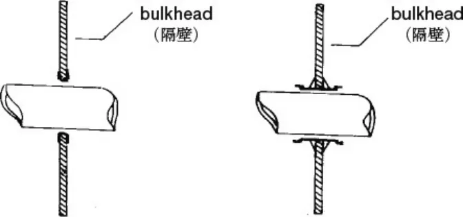</figure>
<p>第2−1図</p>
<figure>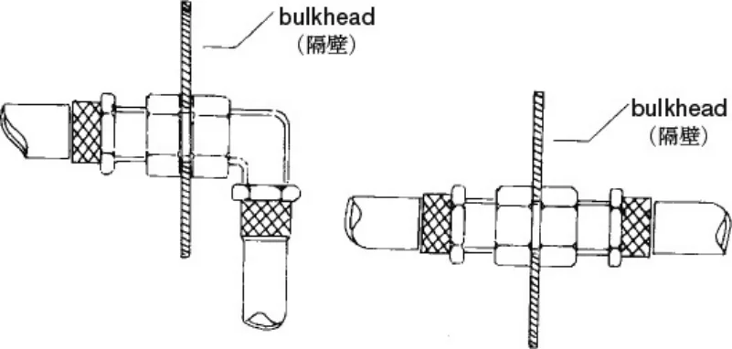</figure>
<p>第2−2図</p>
<h5 id="2-3-配管および取付け具の仕様">2.3 ）配管および取付け具の仕様</h5>
<p>2.3.1 ）燃料、潤滑油または油圧液を収容する配管が柔軟なものである場合、これらの配管はネジ山のついたコネクター、はめ込み式のコネクター、または自動的に密閉されるコネクターと、摩擦と炎に耐え得る（燃焼しないもの）</p>
<p><span class="pagemark" id="p7">P.7</span>外部保護鋼材を有していることを推奨する。</p>
<p>2.3.2 ）燃料を収容する配管は、135℃（250°Ｆ）の最低作動温度で計測した場合に、70bar（1000psi）の最低破裂圧力を有していることを推奨する。</p>
<p>2.3.3 ）潤滑油を収容する配管は、232℃（450°Ｆ）の最低作動温度で計測した場合に、70bar（1000psi）の最低破裂圧力を有していることを推奨する。</p>
<p>2.3.4 ）油圧液を収容する配管は、232℃（450°Ｆ）の最低作動温度で計測した場合に、280bar（4000psi）の最低破裂圧力を有していることを推奨する。</p>
<p>油圧システムの作動圧力が140bar（2000psi）を超える場合は、作動圧力の少なくとも２倍の破裂圧力がなければならない。</p>
<h5 id="第-3-条-安全ベルト">第 3 条  安全ベルト</h5>
<p>メーカーラインオフ時に装備されている安全ベルト（３点式等）に加え、４点式以上の安全ベルト（ＦＩＡ公認安全ベルトの使用を強く推奨する。）を装備することを強く推奨する。なお、ラリー競技開催規定における第２種アベレージラリー競技開催規定における第４条３に該当する区間が設定されている場合、およびスペシャルステージラリー競技開催規定に従った競技会に参加する場合は、当該規定に従うこと。</p>
<p>装備する場合、下記条件に従わなければならない。</p>
<p>①追加装備する安全ベルトはワンタッチ式フルハーネスタイプ（４点式以上）とし、第５編細則「ラリー競技およびスピード競技における安全ベルトに関する指導要綱」または第５編細則「レース競技における安全ベルトに関する細則」またはＦＩＡ国際モータースポーツ競技規則付則Ｊ項第２５３条安全装置第６項「安全ベルト」のいずれかに従うこと。ＦＩＡ国際モータースポーツ競技規則付則Ｊ項第２５３条に定められた取り付け方法も可（第２−３図～第２− ５図参照）。</p>
<figure>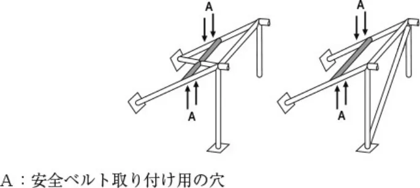</figure>
<p>第2−3図　　　　　第2−4図</p>
<figure>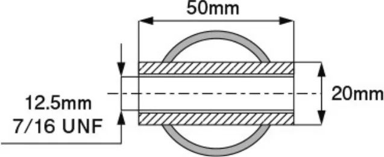</figure>
<p>第2−5図 − Ａ穴の断面図</p>
<p>②追加装備する安全ベルトは、既設の安全ベルト（３点式等）の取り付け装置にフック等を用いて容易に着脱できる構造でなければならない。</p>
<p>自動車製造者が設置した「取り付け部（取り付けネジ部）：Ａｎｃｈｏｒ」を使用せず新たに設置する場合は以下によること。</p>
<p>・車体に固定する場合は自動車製造者が設置した取り付け部を除き、脱着開閉する部位は不可。</p>
<p>③追加装備する安全ベルトは競技走行中のみ装着することが許される。したがって、それ以外の通常走行時は既設の安全ベルト（３点式等）を装着すること。</p>
<p>④競技中に４点式以上の安全ベルトを装着する場合には、乗車人員は２名とすること。</p>
<p>⑤４点式以上の安全ベルトを追加装備することにより後部乗員の乗降性が確保できなくなる場合には、各運輸支局等において乗車定員変更のための構造等変更検査の手続きを行うこと。</p>
<p><span class="pagemark" id="p8">P.8</span>肩部ストラップの取り付け：</p>
<p>肩部ストラップは、ループによって安全ケージあるいは補強バーに固定できる。また、それを後部ベルトの上部取付け点に固定、もしくは安全ケージのバックステー同士の間に溶接された横方向の補強材、または第２５３−１８図、第２５３− ２６図、第２５３−２７図、第２５３−２８図、あるいは第２５３−３０図に従う溶接された横断するパイプによる横方向の補強材に固定またはそれを拠り所としても良い。</p>
<p>（付則J項第２５３−６６・６７図参照）</p>
<p>注：第２−３図～２−５図に同じ。</p>
<figure>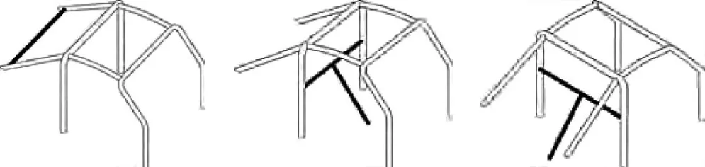</figure>
<p>第253−18図　　　　　　　 第253−26図　　　　　　　　 第253−27図</p>
<figure>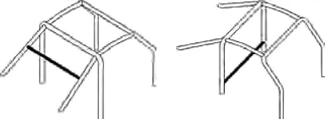</figure>
<p>第253−28図　　　　　　　 第253−30図</p>
<h5 id="第-4-条-消火装置">第 4 条　消火装置</h5>
<p>手動消火器または自動消火装置を装備することを強く推奨する。なお、ラリー競技開催規定における第２種アベレージラリー競技開催規定における第４条３に該当する区間ならびにスペシャルステージが設定されている場合、およびスペシャルステージラリー競技開催規定に従った競技会に参加する場合は、当該規定に従うこと。これらの消火装置はＦ ＩＡの認定を受けたものであることが望ましく、装着する場合は下記条件に従わなければならない。</p>
<h5 id="4-1-手動消火器">4.1 ）手動消火器</h5>
<p>手動消火器とは消火器単体をドライバー等が取り外して消火を行うための消火器をいう。</p>
<h5 id="4-1-1-取り付け">4.1.1 ）取り付け</h5>
<p>各々の消火容器の取り付けは、クラッシュ時の減速度がいかなる方向に加えられても耐えられるように取り付けなければならず、取り付け方向は車両の前後方向中心線に対し直角に近い状態であること。（リベット止めは禁止される）</p>
<p>金属性ストラップの付いたラピッドリリースメタル（ワンタッチ金具）の装着のみ認められる。</p>
<h5 id="4-1-2-取り付け場所">4.1.2 ）取り付け場所</h5>
<p>消火器はドライバー等が容易に取り外せる位置に取り付けられなければならない。</p>
<h5 id="4-1-3-検査">4.1.3 ）検査</h5>
<p>下記情報を各消火器に明記しなければならない。</p>
<p>−　容器の容量</p>
<p>−　消火剤の種類</p>
<p>−　消火剤の重量もしくは容量</p>
<p>−　消火器の点検日</p>
<p>4.1.4 ）消火器の点検日は、消火剤の充填期日もしくは前回点検期日から２年以内とする。（消火剤の充填期日もしくは前回の点検期日から２年を過ぎて使用してはならない。）但し、２年毎の点検を継続したとしても消火器の製造者が定めた有効年数あるいは耐用年数を超えて使用することはできない。</p>
<p>−　消火器の製造者が有効年数あるいは耐用年数を定めていない場合、その使用期限は製造期日（または初回充填期日）から７年間を目処とする。</p>
<p>−　消火剤の充填日もしくは前回検査日の表示が年（月）表示である場合、有効期間の起算日は当該年（月）の末日とする。</p>
<p><span class="pagemark" id="p9">P.9</span>外部が損傷している容器は交換しなければならない。</p>
<h5 id="4-1-5-仕様">4.1.5 ）仕様</h5>
<p>１つあるいは２つの消火剤容器とする。粉末2.0kg以上（ＡＥ車両はＡＢＣ消火器を推奨する）、または、ＦＩ Ａ国際モータースポーツ競技規則付則Ｊ項第253条に記された消火剤および内容量を装備すること。</p>
<h5 id="4-2-自動消火装置">4.2 ）自動消火装置</h5>
<p>自動消火装置とは、車両に固定された消火装置が、車室内とエンジンルームに対し起動装置によって同時に作動するものをいう。</p>
<h5 id="4-2-1-取り付け">4.2.1 ）取り付け</h5>
<p>各々の消火装置の容器は、いかなる方向にクラッシュ時の減速度が加わってもそれに耐えられるように取り付けられなければならない。</p>
<h5 id="4-2-2-操作・起動">4.2.2 ）操作・起動</h5>
<p>２つの系統は同時に起動しなければならない。いかなる起動装置も認められる。しかしながら、起動系統が機械式だけでない場合、主要エネルギー源からでないエネルギー源を備えなければならない。</p>
<p>運転席に正常に着座し、安全ベルトを着用したドライバーが起動装置を操作できなければならない。</p>
<p>車両の外部のいかなる者も同時に操作できること。外部からの起動装置はサーキットブレーカーに隣接して、あるいは、それと組み合わせて位置しなければならない。また、赤色で縁取られた直径が最小10cmの白色の円形内に赤色でＥの文字を描いたマークによって表示されなければならない。</p>
<p>ヒートセンサーによる自動起動装置が推奨される。</p>
<p>装置はいかなる車両姿勢にあっても、たとえ車両が転倒した場合でも作動しなければならない。</p>
<h5 id="4-2-3-検査">4.2.3 ）検査</h5>
<p>下記情報を各消火装置に明記しなければならない。</p>
<p>−　容器の容量</p>
<p>−　消火剤の種類</p>
<p>−　消火剤の重量もしくは容量</p>
<p>−　消火装置の点検日</p>
<p>4.2.4 ）消火装置の点検日は、消火剤の充填期日もしくは前回点検期日から２年以内とする。（消火剤の充填期日もしくは前回の点検期日から２年を過ぎて使用してはならない。）但し、２年毎の点検を継続したとしても消火装置の製造者が定めた有効年数あるいは耐用年数を超えて使用することはできない。</p>
<p>−　消火装置の製造者が有効年数あるいは耐用年数を定めていない場合、その使用期限は製造期日（または初回充填期日）から７年間を目処とする。</p>
<p>−　消火剤の充填日もしくは前回検査日の表示が年（月）表示である場合、有効期間の起算日は当該年（月）の末日とする。</p>
<p>外部が損傷している容器は交換しなければならない。</p>
<h5 id="4-2-5-仕様">4.2.5 ）仕様</h5>
<p>ＦＩＡ国際モータースポーツ競技規則付則Ｊ項第253条に記された消火剤および内容量を装備すること。</p>
<p>消火装置は耐火性でなければならず、また、衝撃に対して防護されていなければならない。消火剤の噴出ノズルは、乗員に直接消火剤がかかることのないように取り付けなければならない。（凍傷の危険）</p>
<h5 id="4-2-6-放射時間">4.2.6 ）放射時間</h5>
<p>車室内　：最短30秒／最長80秒</p>
<p>エンジン（ＡＥ車両については電気モーターを含み）：最短10秒／最長40秒</p>
<p>両方の消火装置が同時に作動しなければならない。</p>
<h5 id="第-5-条-ロールケージ">第 5 条　ロールケージ</h5>
<p>5.1 ）ＲＲＮ車両は、ＦＩＡまたはＡＳＮによって公認されたロールケージを装着しなければならない。ただし、グループＮとして公認された車両は、２０１６年ＦＩＡ国際モータースポーツ競技規則付則Ｊ項第253条第８項に従ったロールケージを装着することも許される。</p>
<p>5.2 ）ＲＪ車両は、ＪＡＦ国内競技車両規則第１編レース車両規定第４章公認車両および登録車両に関する安全規定に従ったロールケージを装着し、かつ運転席および助手席側に左右対称に構成されたドアバーの装着が義務付けられる。また、同規定におけるルーフの補強に関する第４−17Ａ図および第４−17Ｂ図の構成は認められない。第１編レース車両規定第４章６.３.２.１.４）については適用せず、推奨とする。</p>
<p><span class="pagemark" id="p10">P.10</span>また、ＪＡＦ国内競技車両規則第１編レース車両規定第４章公認車両および登録車両に関する安全規定第６条</p>
<h5 id="6-3-5-防護のための被覆に従うこと">6.3.5）防護のための被覆に従うこと。</h5>
<p>なお、ＦＩＡ国際モータースポーツ競技規則付則Ｊ項第253条第８項１およびＪＡＦ国内競技車両規則第１編レース車両規定第４章公認車両および登録車両に関する安全規定第６条6.1）のうち下記※については２０２５年より全車両に義務付けられる。</p>
<p>※コクピット内部において、車体側面の部材とロールケージの間に次のものを通すことは禁止される。</p>
<p>－電気ケーブル</p>
<p>－液体（ウインドウォッシャー液を除く）用配管</p>
<p>－消火器用配管</p>
<p>ＦＩＡまたはＡＳＮによって公認されたロールケージの使用は許されるが、アルミニウム製ロールケージの使用は許されない。公認ロールケージに対する改造はいかなるものでも認められない。</p>
<p>ロールケージの材質はスチールとし、下記の規定に従うこと。</p>
<p>5.3 ）2016年11月１日以降に指定を受けた型式指定自動車および2016年10月31日以前に指定を受けた型式指定自動車で2018年11月１日以降に継続生産された車両に上記4.1）または4.2）に従いロールケージを装着する場合は、別途定める手続きに基づき、ＪＡＦに申請を行うこと。</p>
<p>5.4 ）ＲＰＮ車両、ＲＦ車両およびＡＥ車両は、下記のロールケージを装着すること。</p>
<p>5.4.1 ）６点式＋左右のドアバーを基本構造（第２−６図〜第２−７図参照）とし、第１章一般規定第５条に従い換算した後の気筒容積が2，000㏄を超える車両については、少なくとも１本の斜行ストラット（第２−８図〜第２−９図参照）を取り付けたロールケージを装着することを強く推奨する。なお、2020年以降に初度登録された車両のＲ Ｆ車両については、装着すること。</p>
<p>なお、ラリー競技開催規定におけるスペシャルステージラリー競技開催規定に従った競技会に参加する場合は、当該規定に従うこと。</p>
<figure>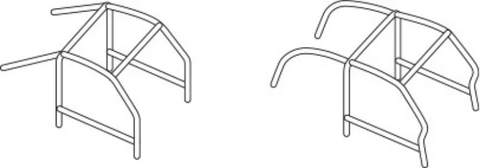</figure>
<p>第2−6図　　　　　　　　　第2−7図</p>
<figure>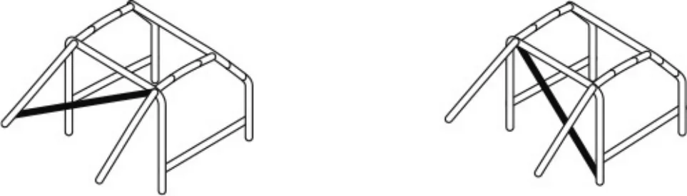</figure>
<p>第2−8図　　　　　　　　　　　　　　　　　　　第2−9図</p>
<h5 id="5-4-2-ロールケージを構成するパイプの仕様">5.4.2 ）ロールケージを構成するパイプの仕様</h5>
<p>①材質は冷間仕上継目無炭素鋼（引抜鋼管）とする。</p>
<p>②円形の断面を有する継目のない１本のパイプを使用すること。</p>
<p>③最小寸法は40mm（直径）×２mm（肉厚）とする。</p>
<p>④最小寸法以下のパイプで構成されるロールケージをすでに装着している車両については、当該ロールケージを継続使用することができる。ただし、メインロールバーとハーフ・サイドロールバーのうち、少なくとも一方が最小寸法未満である場合は、第２−10図に示される通り、それらの連結部を補強しなければならない。上記に関わらず、35mm（直径）×２mm（肉厚）未満のパイプの継続使用は認められない。</p>
<figure><span class="pagemark" id="p11">P.11</span>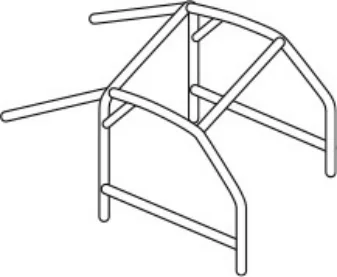</figure>
<p>第2−10図</p>
<h5 id="5-4-3-遵守事項">5.4.3 ）遵守事項</h5>
<p>ロールケージの装着に関して下記の規定に従うこと。</p>
<p>①ロールケージを取り付けた状態における乗車装置は、座席面上で座席前端より200mmの点から背もたれに平行な天井（ロールバーが頭部付近にある場合はロールバー）までの距離が800mm以上であること。</p>
<p>②乗員の頭部等を保護するため、頭部等に接触する恐れのあるロールケージの部位は、緩衝材で覆われていること。</p>
<p>③乗員が接触する恐れのあるロールバーは、半径3.2mm未満の角部を有さないものであること。</p>
<p>④ロールケージを取り付けることにより、前方視界およびバックミラーによる視界を妨げるものでないこと。</p>
<p>⑤ロールケージを取り付けることにより乗員の乗降を妨げるものでないこと。なお、ロールケージの取り付けにより後部乗員のための室内高の確保および乗降口等の確保ができない場合には、各運輸支局等において乗車定員変更のための構造等変更検査の手続を行うこと。</p>
<p>⑥ロールケージ取り付けのための最小限の改造（ダッシュボードの貫通、内張りの切削等）は許される。</p>
<p>⑦ＡＥ車両については、高電圧部位およびその配線などに接触の恐れがないように取り付けること。</p>
<p>⑧2016年11月１日以降に指定を受けた型式指定自動車および2016年10月31日以前に指定を受けた型式指定自動車で2018年11月１日以降に継続生産された車両に上記に基づくロールケージを装着する場合、フロントロールバーあるいはサイドロールバーのフロントの支柱の補強バー（第２－11図〜第２－13図参照）を取り付ける場合は、別途定める手続きに基づき、ＪＡＦに申請を行うこと。</p>
<figure>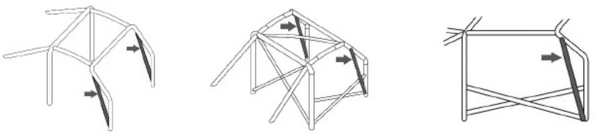</figure>
<p>第2－11図　　　　　　　　　　　　第2－12図　　　　　　　　　　　　　第2－13図</p>
<h5 id="5-4-4-車体への取り付け">5.4.4 ）車体への取り付け</h5>
<p>ロールケージの最少取り付け点数</p>
<p>・メインロールバーの支柱１本につき１ヶ所。</p>
<p>・サイドロールバー（あるいは、フロントロールバー）の支柱１本につき１ヶ所。</p>
<p>・リアストラットの支柱につき１ヶ所。</p>
<p>①支柱側の最少取り付け点における車体への取り付け板は、面積60cm</p>
<p>2、板厚2.5mm以上を有すること。この取り</p>
<p>付け板は支柱に溶接されていなくてはならない。</p>
<p>2、厚さ3.0mm以上を有し、第２−14図〜第２−28図（全周を溶接すること）に</p>
<p>②車体側の補強板は、面積120cm</p>
<p>示すように取り付けること。</p>
<p>但し第２−14 図については、補強板を必ずしもボディシェルへ溶接しなくともよい。</p>
<p>③各支柱と車体との結合は、下記のいずれかの方法によること。</p>
<p>i）直径８mm 以上（４Ｔ以上）のボルトを３本以上使用し、緩み止め効果のあるナット（ワッシャー／セルフロッキング等）で、支柱の周辺に分散して取り付ける。（第２－14 図〜第２－28 図を参照）</p>
<p>ii）溶接により取り付ける場合、車体あるいは骨組み（フレーム）に溶接して取り付ける。ロールバーの脚部取り付け板は、補強板無しで、直接ボディシェルに溶接してはならない。</p>
<p>i）およびii）の取り付け方法は最少限を示すものである。ボルトの数を増加することや取り付け点の数を増やすことは許される。また、ロールケージを取り付けるためにヒューズボックスを移動することは許される。</p>
<p><span class="pagemark" id="p12">P.12</span>特殊な場合：</p>
<p>非鋼鉄製のボディシェル／シャシーの場合、ケージとボディシェル／シャシーとの溶接は一切禁止され、ボディシェル／シャシー上に補強板を接着することのみ許される。</p>
<p>④ＲＰＮ車両およびＡＥ車両のロールバーの基本取付け部の車体への取り付けは、原則として連結部を含めボルトオンとする。但し、溶接により取付する場合は、ＪＡＦ国内競技車両規則第１編レース車両規定第４章公認車両および登録車両に関する安全規定に従ったロールケージを装着し、かつ運転席および助手席側に左右対称に構成されたドアバーの装着が義務付けられる。</p>
<p>また、同規定におけるルーフの補強に関する第４−１７Ａ図および第４−１７Ｂ図の構成は認められない。第１編レース車両規定第４章６.３.２.１.４）については適用せず、推奨とする。</p>
<p>i）メインロールバーはセンターピラーにボルトオンで取り付けることができる。</p>
<p>ii）ピラーの既存の取付部（シートベルト等）等を利用したボルトによる取付のみが認められる（車体側の加工は出来ない）。</p>
<p>iii）ロールバーにステーを溶接することは認められる。</p>
<h5 id="5-4-5-取り外し可能な連結金具">5.4.5 ）取り外し可能な連結金具</h5>
<p>ロールケージに取り外し可能な連結金具を使用する場合</p>
<p>ＪＡＦが認可した方式、あるいはそれに準拠したものを用いなければならない（第２−29 図〜第２−36 図参照）。</p>
<p>ボルトの最小直径は十分なもので、材質は４Ｔ以上のものでなければならない。</p>
<figure>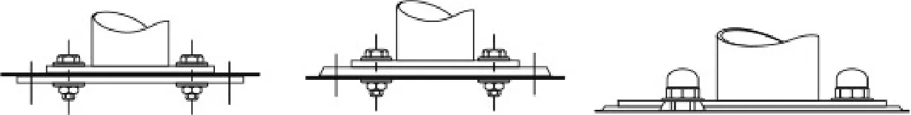</figure>
<p>第2−14図　　　　　　　　　　　第2−15図　　　　　　　　　　　　 第2−16図</p>
<figure>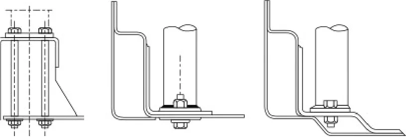</figure>
<p>第2−17図　　　　　　第2−18図　　　　　　　第2−19図</p>
<figure>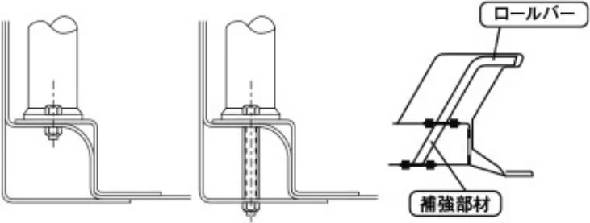</figure>
<p>第2−20図　　　　　第2−21図　　　　第2−22図</p>
<p>（ロールバーはバルクヘッドを貫通していない。）</p>
<figure><span class="pagemark" id="p13">P.13</span>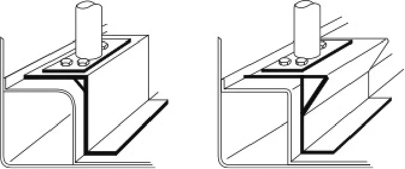</figure>
<p>第2−23図　　　　　　　　　第2−24図</p>
<figure>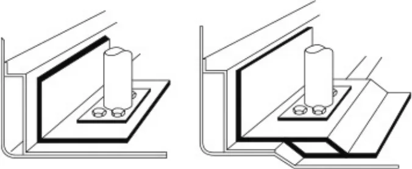</figure>
<p>第2−25図　　　　　　　　　第2−26図</p>
<figure>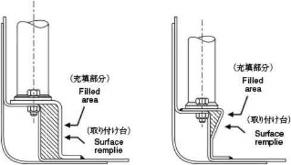</figure>
<p>第2−27図　　　　　第2−28図</p>
<figure>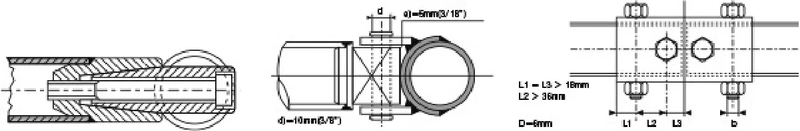</figure>
<p>第2−29図　　　　　　　　　　第2−30図　　　　　　　　　　　　　第2−31図</p>
<figure>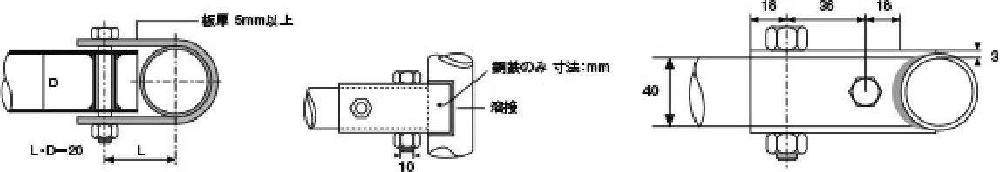</figure>
<p>第2−32図　　　　　　　　　第2−33図　　　　　　　　　　　　　　第2−34図</p>
<figure>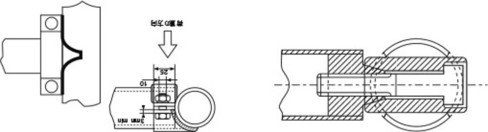</figure>
<p>第2−35図　　　　　　　　　　　　　　　　第2−36図</p>
<h5 id="第-6-条-サーキットブレーカー"><span class="pagemark" id="p14">P.14</span>第 6 条  サーキットブレーカー</h5>
<p>下記規定に従ったサーキットブレーカーの装着を強く推奨する。</p>
<p>イグニッションスイッチおよび燃料ポンプスイッチは、その位置が確認できるよう黄色で明示しなければならない。イグニッションスイッチおよび燃料ポンプスイッチを変更する場合、ＯＮの位置が上、ＯＦＦの位置が下になければならない。</p>
<p>また、運転席および車外から操作できるすべての回路を遮断する各々独立した放電防止型のサーキットブレーカー（主電源回路開閉装置）を装備しなければならない。これらはすべての電気回路を遮断できるものであり、エンジンを停止することができるものであること。その場所は外部から容易に確認できる位置とし、赤色のスパークを底辺が最小12cm の青色の三角形で囲んだ記号で表示すること。引くことにより機能する車外操作部を持つサーキットブレーカーを運転席の反対側のフロントウインドシールド支持枠の下方付近に設置すること。ただし、車両の構造上フロントウインドシールド支持枠の下方付近に設置することが不可能な場合、運転席の反対側のセンターピラーあるいはクォーターピラーの外部から操作可能な位置に装着することが許される。ＡＥ車両にサーキットブレーカーを装着する場合は、高電圧系の回路を改造することは許されない。装着するサーキットブレーカーは、運転席および車外から操作できる12 Ｖ電気回路を遮断する各々独立した放電防止型のサーキットブレーカー（12 Ｖ電源回路開閉装置）とする。これらは12 Ｖ電気回路を遮断できるものであり、エンジン・電気モーターを停止することができるものであること。</p>
<h5 id="第-7-条-けん引用穴あきブラケット">第 7 条  けん引用穴あきブラケット</h5>
<p>すべての車両はすべての競技に際して前後にけん引用穴あきブラケットを備えなければならない。</p>
<p>このけん引用穴あきブラケットは車両が自由に移動できる場合にのみ使用されるものとする。</p>
<p>また、これは明確に確認でき、黄色、あるいは赤色、またはオレンジ色で塗装されていなければならない。</p>
<p>これらは各車両用として装備されている牽引部分／純正の緊急用・けん引工具も認められる。</p>
<p>ただし、第１種アベレージラリーに出場する車両についてはけん引用穴あきブラケットを装備することを推奨とする。</p>
<h5 id="第-8-条-飛散防止フィルム">第 8 条  飛散防止フィルム</h5>
<p>ＦＩＡ国際モータースポーツ競技規則付則Ｊ項第253 条11.1.1 に従い、側面および後部のウィンドウに飛散防止フィルムを貼付すること。また飛散防止用の安全フィルムを使用する場合、車両から5ⅿ離れた人間がクルーおよび車両内部が視認できなければならない。ＲＰＮ・ＡＥ・ＲＦ車両については強く推奨とする。</p>
<h5 id="第-9-条-耐電手袋">第 9 条  耐電手袋</h5>
<p>ＡＥ車両について、その車両の高電圧回路が発生する電圧に対応した耐電手袋を搭載することを強く推奨する。</p>
<h3 id="第-章-車両用改造規定"><span class="pagemark" id="p15">P.15</span>第３章　ＲＲＮ車両用改造規定</h3>
<h5 id="第-1-条-許可される変更">第 1 条　許可される変更</h5>
<p>本規定で許可されていないすべての改造は、明確に禁止される。</p>
<p>改造の範囲や許可される取り付けは下記に規定され、これを除いては、車両に対して行うことのできる作業は、通常の整備に必要な作業、または使用や事故により摩耗・損傷した部品の交換に必要な作業のみとする。当該部品の交換は、市販されている全く同一の部品（当該自動車製造者が補修用として設定している部品を含む）とのみ行うことができる。</p>
<p>ＲＲＮ車両については、本章以下の条項で許可されている改造のみ、ＦＩＡ公認部品以外の使用が認められるが、その他はＦＩＡ公認状態を維持しなければならない。これを除いて車両に対して行うことのできる作業は、道路運送車両法および保安基準適合に係わる事項のみ許される。</p>
<p>・第５条5.1）、5.3）</p>
<p>・第６条6.1）①③〜⑦、6.2）</p>
<p>・第７条7.1.1）、7.1.5）〜7.1.7）、7.2）</p>
<p>・第９条9.1.6）、9.3.2）、9.4）</p>
<p>・第12 条</p>
<h5 id="第-2-条-公認部品等">第 2 条  公認部品等</h5>
<p>2.1 ）ＦＩＡグループＡおよびグループＲとして公認された車両については、道路運送車両の保安基準に適合したＦ ＩＡグループＡおよびＲに有効なオプション変型（ＶＯ）、プロダクション変型（ＶＰ）または供給変型（ＶＦ）として公認されている部品の使用も認められる。</p>
<p>2.2 ）グループＮとして公認された車両については、保安基準に適合し、ＦＩＡグループＮに有効なオプション変型（ＶＯ）、プロダクション変型（ＶＰ）または供給変型（ＶＦ）として公認されている部品の使用が認められる。</p>
<p>加えて、下記の項目に限り、ＦＩＡグループＡのオプション変型（ＶＯ）として公認されている部品の使用も認められる。</p>
<p>①当初のものと同一直径・同一重量のエンジンフライホイール（当初のエンジンフライホイールが２分割構造の場合に限る）</p>
<p>②オートマチックトランスミッションのフライホイール</p>
<p>③オートマチックトランスミッション</p>
<p>④安全ロールケージ</p>
<p>⑤座席取り付け具および支持具</p>
<p>⑥セーフティハーネス（安全ベルト）の取り付け点</p>
<p>⑦２／４ドア変型</p>
<h5 id="第-3-条-エンジン">第 3 条  エンジン</h5>
<p>3.1 ）エンジンルーム内の機械部品を覆うことを目的としたプラスチック製エンジンシールドで、美観を保つこと以外に機能を有さないものであれば、取り外しても良い。また、エンジンルーム内の防音材の取り外しは認められる。</p>
<p>3.2 ）アクセルケーブルの交換または二重化は認められる。また、フライバイワイヤー方式（電気信号により操作するもの）を機械式に変更することも許される。</p>
<p>3.3 ）ボルトおよびねじは同じ材質であれば変更することが許される。</p>
<h5 id="3-4-点火装置">3.4 ）点火装置</h5>
<p>スパークプラグ、レブ・リミッター、ハイテンションコード・イグニッションコイルの銘柄および型式はその機能が維持されていれば変更することが許される。</p>
<h5 id="3-5-電子制御装置">3.5 ）電子制御装置</h5>
<p>変更は許されるが、変更されたユニットは当初のものと完全に互換性がなければならない。すなわち、いかなる場合であっても当該ユニットを量産ユニットと交換してエンジンが正常に稼動しなければならず、入力側のセンサーおよびアクチュエーターはその機能を含みメーカーラインオフ状態の仕様と同一であること。</p>
<p>3.6 ）データロギング（エンジン制御データおよび実走行データ記録装置）</p>
<p>データロギングシステムの使用は認められるが、入力側のセンサーはその機能を含みメーカーラインオフ状態の仕様であること。ただし、水温、油温、油圧、エンジン回転についてはセンサーの追加も認められる。</p>
<p>ケーブルリンクおよびチップカード以外の方法による車両のデータ変更は認められない。</p>
<h5 id="3-7-冷却装置"><span class="pagemark" id="p16">P.16</span>3.7 ）冷却装置</h5>
<p>サーモスタット、および冷却ファンの作動開始時の温度は制御方式（ファンクラッチ）を含み自由。ラジエターキャップおよびホース類の変更は自由。</p>
<h5 id="3-8-キャブレター">3.8 ）キャブレター</h5>
<p>当初の装置が保持され、かつ燃焼室への燃料の流入量を調整する構成部分が空気量に影響を一切与えないということを条件に改造することが認められる。</p>
<h5 id="3-9-インジェクションシステム">3.9 ）インジェクションシステム</h5>
<p>当初の方式を変更することは許されない。</p>
<p>インジェクターは、作動原理および取り付け方法を保持していれば流量の変更は認められるが、構成部品が吸入空気量に影響を一切与えないことを条件とする。</p>
<h5 id="3-10-エアクリーナー">3.10 ）エアクリーナー</h5>
<p>エレメントの変更のみ自由。</p>
<h5 id="3-11-潤滑油系統">3.11 ）潤滑油系統</h5>
<p>オイルパンへのバッフル（仕切り板）の追加が認められる。当初の方式を維持していればオイルフィルターカートリッジの変更も認められる。</p>
<p>ターボチャージャー付きエンジンについては、ターボチャージャーの潤滑配管を、第２章第１条に従った配管に置き換えることができる。これらの配管にはスナップ・コネクターを取り付けることができる。</p>
<h5 id="3-12-マウント・ブッシュ">3.12 ）マウント・ブッシュ</h5>
<p>エンジンおよびトランスミッションマウントのブッシュは、取り付け点の数を維持し同一材質および形状であれば硬度の変更は認められる。</p>
<h5 id="3-13-排気系-エキゾーストマニホールドは含まれない">3.13 ）排気系（エキゾーストマニホールドは含まれない）</h5>
<p>変更は許されるが、下記の規定を満たしていなければならない。変更する場合、第５編細則「ラリー車両およびスピードＳＡ車両の後付マフラーに関する細則」に留意すること。なお、オーガナイザーは当該競技会特別規則に規定することによって、音量を規制することができる（マフラーおよび排気管の変更について制限することも含む）。</p>
<p>①排気管は左または右向きに開口してはならない。</p>
<p>②触媒コンバーター、排気ガス再循環装置、Ｏ2センサー、二次空気導入装置等が当初の通り取り付けられていること。</p>
<p>③遮熱板等の熱害対策装置は同一の構造を有し、かつ同じ位置に備えられ損傷・脱落がないこと。</p>
<p>④いかなる場合も、当該車両の保安基準適合品への変更であり、音量規制値および排気ガス規制値に適合していること。</p>
<h5 id="3-14-シリンダーヘッドガスケット">3.14 ）シリンダーヘッドガスケット</h5>
<p>当初の厚さを維持していれば材質の変更は許される。</p>
<h5 id="3-15-オートクルーズ">3.15 ）オートクルーズ</h5>
<p>装置の接続は外すことが許される。</p>
<h5 id="3-16-総排気量">3.16 ）総排気量</h5>
<p>自動車製造者が当該型式原動機の補修用として設定しているオーバーサイズピストンを含み変更は認められない。</p>
<h5 id="3-17-過給器">3.17 ）過給器</h5>
<p>過給器付きエンジンについては下記の規定が適用される。</p>
<p>①過給器はメーカーラインオフ状態の仕様と同一でなければならない。</p>
<p>②すべての過給器のコンプレッサーハウジングの吸気側にいかなる温度条件下においても最大内径33mm（外径： 39mm未満）のリストリクターを装着しなければならない。ただし、並列する２基のコンプレッサーを有するエンジンの場合、各コンプレッサーの吸気内径は最大22.6mmに制限される。</p>
<p>③リストリクターの取り付けは、ブレードの最上部から50mm以内とし最低でも下流方向に３mmの幅が維持されていること。</p>
<p>④リストリクターは単一の素材で作られていなければならず、シリンダーに供給される空気はすべてこのリストリクターを通過しなければならない。</p>
<p>⑤ディーゼルエンジンのリストリクターは、最大内径35mm、外径41mmとする。</p>
<p>⑥スーパーチャージャー付き車両についてはリストリクターの装着は不要とするが、システム駆動関係のプーリー</p>
<p><span class="pagemark" id="p17">P.17</span>径の変更は認められない。ただし、リストリクター装着車両との性能の均衡が保たれない場合には、本取り扱いを見直す可能性がある。</p>
<p>⑦過給器のコンプレッサーハウジングの内径が市販状態で32mm以下である場合はリストリクターの装着は不要とする。ただし、リストリクター装着車両との性能の均衡が保たれない場合には、本取り扱いを見直す可能性がある。</p>
<p>⑧リストリクターの取り付けについてはＦＩＡ国際モータースポーツ競技規則付則Ｊ項第254条第６項に準拠するものとし、その取り付けに必要なコンプレッサーハウジングへの最小限の加工は認められる。</p>
<h5 id="第-4-条-駆動系統">第 4 条  駆動系統</h5>
<p>4.1 ）駆動方式の変更は認められない。（４WD ←→ ２WD等）</p>
<h5 id="4-2-フライホイール">4.2 ）フライホイール</h5>
<p>フライホイールは自由。ただし、数の変更ならびにカーボン製の使用は許されない。</p>
<h5 id="4-3-クラッチ">4.3 ）クラッチ</h5>
<p>クラッチディスクおよびクラッチカバーは重量を含み自由。ただし、数および直径の変更、ならびにカーボン製の使用は許されない。</p>
<h5 id="4-4-ギアボックス">4.4 ）ギアボックス</h5>
<p>ギアボックス内部の改造は自由。</p>
<h5 id="4-5-ディファレンシャル">4.5 ）ディファレンシャル</h5>
<p>量産ハウジングを改造（内部を除く）することなく装着できる機械式リミッテドスリップディファレンシャル（機械式ＬＳＤ）の装着は認められる。同様に、量産ハウジングを改造することなく装着できるものであれば、ビスカスクラッチ式ＬＳＤを機械式ＬＳＤに変更することも許される。また、油圧または電気式制御でなければ機械式ＬＳＤの方式を変更することも許される。</p>
<p>オリジナル車両が油圧または電気式制御を装備している場合はそのまま使用してよい。この場合、電子制御装置の変更は許されるが、変更されたユニットは当初のものと完全に互換性がなければならない。すなわち、いかなる場合であっても当該ユニットを量産ユニットと交換したときにデフが正常に稼動しなければならず、入力側のセンサーおよびアクチュエーターはその機能および電気配線の数を含みメーカーラインオフ時の仕様と同一であること。</p>
<p>また、ＬＳＤの装着に伴うファイナルギアの変更およびアウトプットシャフトの最小限の変更（スプライン数の変更等）は認められる。</p>
<h5 id="4-6-オートマチックギアボックス">4.6 ）オートマチックギアボックス</h5>
<p>4.6.1 ）ギアボックス内部およびトルクコンバーターの改造は自由。</p>
<p>4.6.2 ）オイルクーラーの変更および取付けも認められる。ただし、新たに取付ける場合は、配管については第２章第１条に従った配管に置き換えることができる。これらの配管にはスナップ・コネクターを取付けることができる。</p>
<p>4.6.3 ）上記変更に伴う電子制御装置の変更については、第３条3.5）に従うものとする。</p>
<h5 id="第-5-条-サスペンション">第 5 条　サスペンション</h5>
<p>ブラケットを含むサスペンション部品の補強は同一材質で且つ当初の形状に沿っていることを条件に許される。</p>
<h5 id="5-1-コイルスプリング">5.1 ）コイルスプリング</h5>
<p>長さ、コイルの巻き数、線径、外径を含み自由。スプリングの数は、同一軸上に直列に取り付けることを条件として、自由である。また、車高調整式への変更も許される。ただし、最低地上高がアンダーガードを含み９cm以下とならないこと（Ｒ車両については公認書に記載されたホイールハブの中心とホイールアーチ開口部間の最小高さ寸法を遵守し、かつ最低地上高がアンダーガードを含み９cm以下とならないこと）。</p>
<h5 id="5-2-リーフスプリング">5.2 ）リーフスプリング</h5>
<p>長さ、幅、厚さ、キャンバーは自由。</p>
<h5 id="5-3-ショックアブソーバー">5.3 ）ショックアブソーバー</h5>
<p>数、形式、作動原理、取り付け位置を保持していれば変更は自由。サスペンションに組み合わされるショックアブソーバーのアッパーマウントをピロボール式に変更することは、取り付け部を含む車体側に一切の変更を施さないことを条件に認められる（キャンバー角度等の調整機能を有していても良い）。またリザーバータンクは独立式でもよい。車室内からショックアブソーバーの遠隔操作による減衰力を調整する装置を取り付けることは認められない。</p>
<h5 id="5-4-スプリングシート">5.4 ）スプリングシート</h5>
<p>形状および材質は自由。</p>
<h5 id="5-5-サスペンションブッシュ"><span class="pagemark" id="p18">P.18</span>5.5 ）サスペンションブッシュ</h5>
<p>当初の方式および材質を維持していれば、その剛性の変更をすることができる。</p>
<h5 id="5-6-スタビライザー">5.6 ）スタビライザー</h5>
<p>ブッシュを含み変更することはできるが、取り外すことは出来ない。また、車室内からの調整式は認められない。</p>
<h5 id="第-6-条-ホイールおよびタイヤ">第 6 条  ホイールおよびタイヤ</h5>
<h5 id="6-1-ホイール">6.1 ）ホイール</h5>
<p>下記条件を満たしたホイールの使用が許される。</p>
<p>①装着するホイールは、ＦＩＡ公認書に記載されている数値および2015年国際モータースポーツ競技規則付則J項</p>
<h5 id="第260条の特別規定に定められる数値とすることができる-ただし-上記以外の最大値を選手権統一規則">第260条の特別規定に定められる数値とすることができる。（ただし、上記以外の最大値を選手権統一規則また</h5>
<p>は特別規則書等により規定することができる。）</p>
<p>②部分的であっても複合素材から成るホイールの使用は禁止する。</p>
<p>③ホイールの材質はスチール製またはJWLマークのある軽合金製（アルミ合金製、マグネシウム合金製など）とする。</p>
<p>④ホイールナットの材質および形状の変更は許されるが、ホイールスペーサーの使用は認められない。</p>
<p>ホイールに間隔保持のための部材を溶接することはホイールスペーサーの使用とみなされる。また、アクスルハブに間隔保持のための部材を取り付けることは、その取り付け方法の如何にかかわらずホイールスペーサーの使用とみなされる。</p>
<p>⑤ホイールの寸法を小さくすることは許される。</p>
<p>⑥いかなる場合にも、車両のトレッドを拡大することは認められない。ただし、ホイールの変更に伴う最小限のトレッドの変化は許される。</p>
<p>⑦ホイールに追加される排風装置の装着は認められない。</p>
<h5 id="6-2-タイヤ">6.2 ）タイヤ</h5>
<p>前項規定に合致したホイールを適用リムとし、これに装着できるタイヤとしてJATMA YEAR BOOKに記載されているもの、またはこれと同等なものであり、かつ下記の条件を満たしていなければならない。</p>
<p>①公道走行が認められている一般市販タイヤおよびラリー用として認められたＦＩＡ公認タイヤ（注１）に限られる。競技専用タイヤの使用はいかなる場合でも認められない（注１は除く）。</p>
<p>②タイヤおよびホイールは、静止状態において地表以外の部分と接触してはならない。</p>
<p>③タイヤおよびホイールは、フェンダーからはみ出さないこと。（第3−1図参照）</p>
<figure></figure>
<p>第３−１図</p>
<p>④タイヤの溝は常に1.6mm以上あること。</p>
<p>⑤いかなる場合であっても、タイヤに対する加工は許されない。</p>
<p>⑥タイヤのウォームアップ、溶剤塗布などは認められない。</p>
<p>⑦原則としてスパイクタイヤの使用は認められない。</p>
<p>⑧タイヤ内部に空気以外のものを充填することは禁止される。</p>
<h5 id="6-3-スペアホイール">6.3 ）スペアホイール</h5>
<p>車両には１本または複数のスペアホイールを搭載しなければならない（ただし、当初の車両に搭載されていない場合はこの限りではない）。スペアホイールは必ずしっかりと固定されていなければならない。</p>
<h5 id="第-7-条-制動装置">第 7 条  制動装置</h5>
<h5 id="7-1-主ブレーキ">7.1 ）主ブレーキ</h5>
<p>7.1.1 ）ブレーキライニング（パッド）については、変更することが許される。またその取り付け方式（リベット・接</p>
<p><span class="pagemark" id="p19">P.19</span>着等）を変更することも許される。</p>
<h5 id="7-1-2-ブレーキホースの変更は自由">7.1.2 ）ブレーキホースの変更は自由。</h5>
<p>7.1.3 ）バックプレート（保護用プレート）の取り外しまたは改造は自由。</p>
<p>7.1.4 ）リアブレーキへのプロポーショニングバルブの装着は、車両公認書のオプション変型（ＶＯ）として公認されたもの、および同一車両型式に設定されたものに限り認められる。</p>
<p>7.1.5 ）ブレーキキャリパー内のピストンの背後にノックバック防止を目的としたスプリングを追加することは許される。</p>
<p>7.1.6 ）ホイール内に付着した泥を排除することを目的としたスクレッパーの取り付けは許される。</p>
<p>7.1.7 ）ブレーキキャリパー、ブレーキディスクの変更は自由、サイズの変更も認められるが以下に従うこと。ただし、カーボン製ブレーキディスクの使用は禁止される。</p>
<p>①キャリパーは、ブレーキコンポーネントメーカーから市販されている生産部品であること。ホイール毎に１つのキャリパーユニットのみであること。キャリパーハウジング／ボディにはスチールまたはアルミニウム製のみが認められる。キャリパーあたり最大４つのピストンまでとする。取り付けブラケットは自由に作成されてもよい。ブラケットを除いて、すべての部品は製品カタログまたは部品カタログから入手することができなければならない。チタンおよびセラミック材料は特に禁止される。</p>
<p>②ディスク（ローター）と取り付けベルは、通常入手可能な一般に販売されている部品（市販品）であること。ターマック用はディスクの最大直径355mmとする。グラベル用はディスクの最大直径300mmとする。すべての部品は製品カタログまたは部品カタログから入手することができなければならない。</p>
<h5 id="7-2-ハンドブレーキ">7.2 ）ハンドブレーキ</h5>
<p>レバーの改造は許されるが、当初の取り付け位置および機能を維持していなければならない。</p>
<h5 id="第-8-条-操舵装置">第 8 条　操舵装置</h5>
<p>8.1 ）パワーステアリングとラックを繋いでいる配管を、第２章第１条に従った配管に変更することができる。</p>
<p>8.2 ）ステアリングホイールは、舵取装置の衝撃吸収装置に影響を与えないものであれば、ステアリングホイールハブを含み変更することができる。ただし、クイックリリースタイプは認められない。</p>
<h5 id="第-9-条-車体">第 9 条　車体</h5>
<h5 id="9-1-外観">9.1 ）外観</h5>
<h5 id="9-1-1-ホイールキャップは取り外さなければならない">9.1.1 ）ホイールキャップは取り外さなければならない。</h5>
<p>9.1.2 ）ヘッドライト保護用のカバーの取り付けは許されるが、いかなる場合でも空力特性並びに冷却特性に影響を及ぼすものであってはならない。</p>
<p>9.1.3 ）車体下部を保護することを目的とした空力効果を生じない保護体（アンダーガード等）の装着は認められる。</p>
<h5 id="9-1-4-前後ワイパーブレードの変更は許される">9.1.4 ）前後ワイパーブレードの変更は許される。</h5>
<p>9.1.5 ）空力装置については純正装着のものを取り外すことは許される。また交換、追加することも許されるが、その場合は公認書およびカタログに記載されているものを強く推奨される。また、第５編細則「アクセサリー等の自動車部品」の１に該当する部品については、取り付けが堅牢であることを含み、同細則「エア・スポイラの構造基準」に合致しているものであれば装着が認められる。</p>
<p>9.1.6 ）マッドフラップは、以下の条件で装着することができる。</p>
<p>①柔軟な材質でかつ排気管等と干渉してはならず、車体外側表面部位は外側に向けて尖っていたり、鋭い部分がないこと。</p>
<p>②それらは少なくともホイールの全幅を覆い、かつマッドフラップに覆われていない部分が車両の幅の１／３以上であること。</p>
<p>③リアホイールより前方に装着されるマッドフラップ（センターフラップ）の左右の間には、少なくとも20cmの間隔がなくてはならない。</p>
<p>④これらのマッドフラップの底部は、車両停止時に乗員なしで地表から10cm以上に位置してはならない。</p>
<p>⑤垂直投影面にあって、これらのマッドフラップは車体から突出していてはならない。</p>
<h5 id="9-2-内-装">9.2 ）内　装</h5>
<p>9.2.1 ）前座席は後方に移動してもよいが、当初の後部座席の前縁を通る垂直面を超えてはならない。</p>
<p>9.2.2 ）後部座席および後部座席安全ベルトは取り外しても良い。</p>
<p>9.2.3 ）ダッシュボードとコンソールは当初のものを保持していなければならない（ロールケージ取り付けのための最小限の切除は除く）。メーカーラインオフ時から構成品が分割されていて、切り離しなどの改造が不要でかつ小物</p>
<p><span class="pagemark" id="p20">P.20</span>入れやオーディオなどのアクセサリー品を保持するためのものは取り外してもよい。</p>
<p>9.2.4 ）ドア内張りはドアの形状に変化が生じないことを条件としてドアから防音材を取り外すことが認められる。</p>
<p>内張りパネルは最低0.5mm厚の金属板、あるいは最低１mm厚のカーボンファイバー、もしくは最低２mm厚のその他の堅固な不燃性の素材で製作することができる。</p>
<p>サイドプロテクションバーの取り外しは許されない。</p>
<p>２ドア車の場合、後部側面ウィンドウより下に位置する内張りについても上記規則を適用する。</p>
<p>電動ウィンドウを手動ウィンドウに交換することが認められる。</p>
<p>手動ウィンドウを電動ウィンドウに交換することが認められる。</p>
<p>9.2.5 ）ルーフ、荷物室および乗員が着座しない空間の内張りとフロアーカーペットの取り外しは自由。</p>
<p>9.2.6 ）暖房装置は当初のものを保持していなければならない。ただし、エアコンの取り外しは配管およびコンプレッサー等を含み許される。</p>
<p>9.2.7 ）２ボックス車の着脱式リアシェルフの取り外しは許される。</p>
<h5 id="9-3-追加アクセサリー">9.3 ）追加アクセサリー</h5>
<p>9.3.1 ）車両の美観または居住性向上などを目的としたアクセサリーは、車両の性能および特性に影響を与えない場合に限り取り付け、取り外しおよび変更が認められる。</p>
<p>9.3.2 ）操作性向上を目的としたペダルおよびシフトレバーの変更は、当初の原理および機構が保持されていれば認められる。フットレスト等の追加、変更は認められる。</p>
<p>9.3.3 ）各種メーター（モニター機能のみを目的とするものに限る）の追加、変更は認められる。</p>
<p>9.3.4 ）障がい者用操作装置の装着は認められる。ただし、健常者は使用しないこと。</p>
<h5 id="9-4-座-席">9.4 ）座　席</h5>
<p>変更する場合は下記の規定を満たすこと。</p>
<p>変更の有無に拘らず乗車定員分の座席を有すること。</p>
<p>①座席の幅×奥行は400mm × 400mm 以上確保すること。</p>
<p>②座席面上で座席前端より200mm の点から背もたれに平行な天井までの距離は800mm 以上確保すること。</p>
<p>③座席および当該座席の取り付け装置は衝突時等に乗員から受ける衝撃力、慣性力等の荷重に耐えるものでなければならない。</p>
<p>④座席の後面部分（ヘッドレストを含む）は、衝突等で当該座席の後席乗員の頭部等が当たった場合に衝撃を吸収することができる構造でなければならない。</p>
<p>⑤追突等の衝撃を受けた場合に乗員の頭部が過度に後傾するのを抑止することができる装置（ヘッドレスト）を備えるかまたは座席自体が同等の効果を有する構造でなければならない。</p>
<p>⑥２名乗車車両のシートの車体フレームへの直付け（スライド機構無）は許される。</p>
<p>なお、変更する座席および座席取り付け装置は、上記のほかにＦＩＡ国際モータースポーツ競技規則付則Ｊ項第253条第16項２.３.４.５.座席の固定点および支持具を満たしたものでなければならない。</p>
<h5 id="9-5-補-強">9.5 ）補　強</h5>
<p>9.5.1 ）補強は、使用される材料が当初の形状に沿いそれと接触していれば修正加工を含み許される。複合材料による補強は第３－２図のように片面にのみ許される。また、車体、ならびにサイドシル・各メンバー等の空洞部を第３ －３図のように充填することにより補強することができる。</p>
<p>また、補修を目的とした溶接等は認められる。</p>
<figure>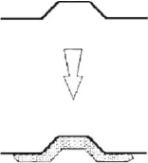</figure>
<figure>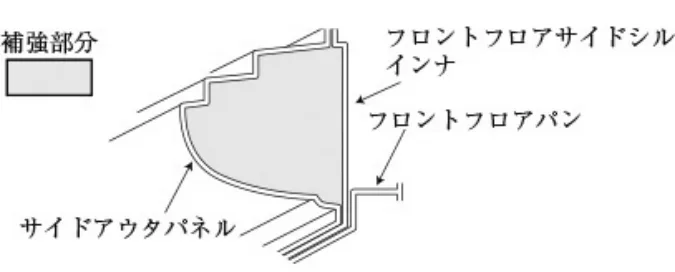</figure>
<p>第３−２図　　　　　　　　　　　 　　第３−３図</p>
<p>9.5.2 ）車体のサスペンション取り付け部を繋ぐ取り外し可能な（ボルトによる取り付け）補強バーの取り付けは許される。ただし、その取り付け点はサスペンションの取り付け点から100mm以内であること。また、メーカーラインオフ時に標準装着されているタワーバーについては、取り付け点を変更しなければ他のものに変更できる。</p>
<p><span class="pagemark" id="p21">P.21</span>9.5.3 ）スペアタイヤのサイズを変更したことによって、当初の格納カバーが装着できない場合はそれを取り除くことができる。</p>
<p>9.5.4 ）マフラーの補強は脱落防止及び破損防止を目的としたものであれば許される。</p>
<h5 id="第-10-条-電気系統">第 10 条　電気系統</h5>
<h5 id="10-1-電-装">10.1 ）電　装</h5>
<p>10.1.1 ）バッテリーは当初の搭載位置並びに電圧を保持していれば形状、容量、バッテリーケーブルは自由。バッテリーケーブルを室内配線に変更することは許される。</p>
<p>10.1.2 ）ダイナモをオルタネーターに変更すること（またその逆）は許されないが、発電容量の大きいものへの変更は認められる。</p>
<h5 id="10-1-3-電気系統のヒューズの追加は認められる">10.1.3 ）電気系統のヒューズの追加は認められる。</h5>
<h5 id="10-2-灯-火">10.2 ）灯　火</h5>
<h5 id="10-2-1-前照灯">10.2.1 ）前照灯</h5>
<p>走行用前照灯（ハイビーム）は公道走行要件を満たすことを条件に追加、変更が認められる。ただし、乗用車の外部突起に係る協定規則第２６号に適合していること。</p>
<h5 id="10-2-2-前部霧灯-フォグランプ">10.2.2 ）前部霧灯（フォグランプ）</h5>
<p>追加、変更は認められるが、取り付けのためやむを得ずバンパー等を切除する場合は、必要最小限の範囲にとどめること。また前部霧灯の取り付け、取り外しに伴う全長の変化は、自動車検査証の長さ欄に記載されている数値から±３cmの範囲でなければならない。また、いかなる場合も下記の基準を満たしていなければならない。</p>
<p>①同時に３個以上点灯する構造のものでないこと。</p>
<p>②照射光線は他の交通を妨げないものであること。</p>
<p>③照明部の上縁の高さが地上0.8ｍ以下であって、すれ違い用前照灯の照明部の上縁を含む水平面以下、下縁の高さが地上0.25ｍ以上となるように取り付けられていること。</p>
<p>④照明部の最外縁は、自動車の最外側から400mm以内となるように取り付けられていること。</p>
<p>⑤灯火の色は白色または淡黄色であり、そのすべてが同一であること。</p>
<p>⑥前部霧灯は左右同数であり（前部霧灯を１個備える場合を除く）、かつ前面が左右対称である自動車に備えるものにあっては、車両中心面に対して対称の位置に取り付けられたものであること。</p>
<p>⑦取り付け部は、照射光線の方向が振動、衝撃等により容易にくるわない構造であること。</p>
<h5 id="10-2-3-後退灯">10.2.3 ）後退灯</h5>
<p>後退灯は、ギアレバーの後退と必ず連動していること。</p>
<h5 id="第-11-条-燃料回路">第 11 条　燃料回路</h5>
<p>燃料タンクは燃料ポンプ、燃料配管を含みメーカーラインオフ状態を維持すること。</p>
<h5 id="第-12-条-ジャッキ">第 12 条　ジャッキ</h5>
<p>ジャッキアップポイントの補強、移動、追加は認められるが、あくまでもその改造はジャッキアップを目的としたものに限定される。</p>
<h3 id="第-章-車両用改造規定-2"><span class="pagemark" id="p22">P.22</span>第４章　ＲＪ車両用改造規定</h3>
<h5 id="第-1-条-許可される変更-2">第 1 条　許可される変更</h5>
<p>本規定で許可されていないすべての改造は、明確に禁止される。</p>
<p>改造の範囲や許可される取り付けは下記に規定され、これを除いては、車両に対して行うことのできる作業は、通常の整備に必要な作業、または使用や事故により摩耗・損傷した部品の交換に必要な作業のみとする。当該部品の交換は、市販されている全く同一の部品（当該自動車製造者が補修用として設定している部品を含む）とのみ行うことができる。</p>
<h5 id="第-2-条-公認部品等-2">第 2 条  公認部品等</h5>
<p>2.1 ）ＪＡＦ登録車両と同一車両型式に設定されている純正部品およびメーカーオプションで、改造および加工の必要なく取り付けられるものであれば使用が認められる。ただし、本改造規定が優先される。</p>
<h5 id="第-3-条-エンジン-2">第 3 条  エンジン</h5>
<p>3.1 ）エンジンルーム内の機械部品を覆うことを目的としたプラスチック製エンジンシールドで、美観を保つこと以外に機能を有さないものであれば、取り外しても良い。また、エンジンルーム内の防音材の取り外しは認められる。</p>
<p>3.2 ）アクセルケーブルの交換または二重化は認められる。また、フライバイワイヤー方式（電気信号により操作するもの）を機械式に変更することも許される。</p>
<p>3.3 ）ボルトおよびねじは同じ材質であれば変更することが許される。</p>
<h5 id="3-4-点火装置-2">3.4 ）点火装置</h5>
<p>スパークプラグ、レブ・リミッター、ハイテンションコード・イグニッションコイルの銘柄および型式はその機能が維持されていれば変更することが許される。</p>
<h5 id="3-5-電子制御装置-2">3.5 ）電子制御装置</h5>
<p>変更は許されるが、変更されたユニットは当初のものと完全に互換性がなければならない。すなわち、いかなる場合であっても当該ユニットを量産ユニットと交換してエンジンが正常に稼動しなければならず、入力側のセンサーおよびアクチュエーターはその機能を含みメーカーラインオフ状態の仕様と同一であること。</p>
<p>3.6 ）データロギング（エンジン制御データおよび実走行データ記録装置）</p>
<p>データロギングシステムの使用は認められるが、入力側のセンサーはその機能を含みメーカーラインオフ状態の仕様であること。ただし、水温、油温、油圧、エンジン回転についてはセンサーの追加も認められる。</p>
<p>ケーブルリンクおよびチップカード以外の方法による車両のデータ変更は認められない。</p>
<h5 id="3-7-冷却装置-2">3.7 ）冷却装置</h5>
<p>サーモスタット、および冷却ファンの作動開始時の温度は制御方式（ファンクラッチ）を含み自由。ラジエターキャップおよびホース類の変更は自由。</p>
<h5 id="3-8-キャブレター-2">3.8 ）キャブレター</h5>
<p>当初の装置が保持され、かつ燃焼室への燃料の流入量を調整する構成部分が空気量に影響を一切与えないということを条件に改造することが認められる。</p>
<h5 id="3-9-インジェクションシステム-2">3.9 ）インジェクションシステム</h5>
<p>当初の方式を変更することは許されない。</p>
<p>インジェクターは、作動原理および取り付け方法を保持していれば流量の変更は認められるが、構成部品が吸入空気量に影響を一切与えないことを条件とする。</p>
<h5 id="3-10-エアクリーナー-2">3.10 ）エアクリーナー</h5>
<p>エレメントの変更のみ自由。</p>
<h5 id="3-11-潤滑油系統-2">3.11 ）潤滑油系統</h5>
<p>オイルパンへのバッフル（仕切り板）の追加が認められる。当初の方式を維持していればオイルフィルターカートリッジの変更も認められる。</p>
<p>オイルクーラーの変更および取付けも認められる。ただし、新たに取付ける場合は、配管については第２章第１条に従った配管とすること。</p>
<p>ターボチャージャー付きエンジンについては、ターボチャージャーの潤滑配管を、第２章第１条に従った配管に置き換えることができる。これらの配管にはスナップ・コネクターを取り付けることができる。</p>
<h5 id="3-12-マウント・ブッシュ-2">3.12 ）マウント・ブッシュ</h5>
<p>エンジンおよびトランスミッションマウントのブッシュは、取り付け点の数を維持し、取り付けマウントの部材</p>
<p><span class="pagemark" id="p23">P.23</span>は、材質および形状の変更を含み加工および変更することが出来る。</p>
<h5 id="3-13-排気系-エキゾーストマニホールドは含まれない-2">3.13 ）排気系（エキゾーストマニホールドは含まれない）</h5>
<p>変更は許されるが、下記の規定を満たしていなければならない。変更する場合、第５編細則「ラリー車両およびスピードＳＡ車両の後付マフラーに関する細則」に留意すること。なお、オーガナイザーは当該競技会特別規則に規定することによって、音量を規制することができる（マフラーおよび排気管の変更について制限することも含む）。</p>
<p>①排気管は左または右向きに開口してはならない。</p>
<p>②触媒コンバーター、排気ガス再循環装置、Ｏ2センサー、二次空気導入装置等が当初の通り取り付けられていること。</p>
<p>③遮熱板等の熱害対策装置は同一の構造を有し、かつ同じ位置に備えられ損傷・脱落がないこと。</p>
<p>④いかなる場合も、当該車両の保安基準適合品への変更であり、音量規制値および排気ガス規制値に適合していること。</p>
<h5 id="3-14-シリンダーヘッドガスケット-2">3.14 ）シリンダーヘッドガスケット</h5>
<p>当初の厚さを維持していれば材質の変更は許される。</p>
<h5 id="3-15-オートクルーズ-2">3.15 ）オートクルーズ</h5>
<p>装置の接続は外すことが許される。</p>
<h5 id="3-16-総排気量-2">3.16 ）総排気量</h5>
<p>自動車製造者が当該型式原動機の補修用として設定しているオーバーサイズピストンを含み変更は認められない。</p>
<h5 id="3-17-過給器-2">3.17 ）過給器</h5>
<p>過給器付きエンジンについては下記の規定が適用される。</p>
<p>①過給器はメーカーラインオフ状態の仕様と同一でなければならない。</p>
<p>②すべての過給器のコンプレッサーハウジングの吸気側にいかなる温度条件下においても最大内径33mm（外径： 39mm未満）のリストリクターを装着しなければならない。ただし、並列する２基のコンプレッサーを有するエンジンの場合、各コンプレッサーの吸気内径は最大22.6mmに制限される。</p>
<p>③リストリクターの取り付けは、ブレードの最上部から50mm以内とし最低でも下流方向に３mmの幅が維持されていること。</p>
<p>④リストリクターは単一の素材で作られていなければならず、シリンダーに供給される空気はすべてこのリストリクターを通過しなければならない。</p>
<p>⑤スーパーチャージャー付き車両についてはリストリクターの装着は不要とするが、システム駆動関係のプーリー径の変更は認められない。ただし、リストリクター装着車両との性能の均衡が保たれない場合には、本取り扱いを見直す可能性がある。</p>
<p>⑥過給器のコンプレッサーハウジングの内径が市販状態で32mm以下である場合はリストリクターの装着は不要とする。ただし、リストリクター装着車両との性能の均衡が保たれない場合には、本取り扱いを見直す可能性がある。</p>
<p>⑦リストリクターの取り付けについてはＦＩＡ国際モータースポーツ競技規則付則Ｊ項第254条第６項に準拠するものとし、その取り付けに必要なコンプレッサーハウジングへの最小限の加工は認められる。また、リストリクター取り付けに伴う最小限の部品の変更は認める。</p>
<h5 id="第-4-条-駆動系統-2">第 4 条  駆動系統</h5>
<p>4.1 ）駆動方式の変更は認められない。（４WD ←→ ２WD 等）</p>
<h5 id="4-2-フライホイール-2">4.2 ）フライホイール</h5>
<p>フライホイールは自由。ただし、数の変更ならびにカーボン製の使用は許されない。</p>
<h5 id="4-3-クラッチ-2">4.3 ）クラッチ</h5>
<p>ディスク、カバー、スプリング、カラー、メインドライブシャフトフロントカバー、クラッチレリーズシリンダーおよびベアリングを変更することが出来る。ただし、カーボン製の使用は許されない。</p>
<p>機械式クラッチを電磁式クラッチに、電磁式クラッチを機械式クラッチに変更することは認められない。</p>
<h5 id="4-4-ギアボックス-2">4.4 ）ギアボックス</h5>
<p>ギアボックス内部の改造は自由。</p>
<h5 id="4-5-シフトレバー">4.5 ）シフトレバー</h5>
<p>シフトレバー、シフトパターンおよびシフトノブの変更は許される。</p>
<h5 id="4-6-ディファレンシャル"><span class="pagemark" id="p24">P.24</span>4.6 ）ディファレンシャル</h5>
<p>量産ハウジングを改造（内部を除く）することなく装着できる機械式リミッテドスリップディファレンシャル（機械式ＬＳＤ）の装着は認められる。同様に、量産ハウジングを改造することなく装着できるものであれば、ビスカスクラッチ式ＬＳＤを機械式ＬＳＤに変更することも許される。また、油圧または電気式制御でなければ機械式ＬＳＤの方式を変更することも許される。</p>
<p>オリジナル車両が油圧または電気式制御を装備している場合はそのまま使用してよい。この場合、電子制御装置の変更は許されるが、変更されたユニットは当初のものと完全に互換性がなければならない。すなわち、いかなる場合であっても当該ユニットを量産ユニットと交換したときにデフが正常に稼動しなければならず、入力側のセンサーおよびアクチュエーターはその機能および電気配線の数を含みメーカーラインオフ時の仕様と同一であること。</p>
<p>また、ＬＳＤの装着に伴うファイナルギアの変更およびアウトプットシャフトの最小限の変更（スプライン数の変更等）は認められる。</p>
<h5 id="4-7-オートマチックギアボックス">4.7 ）オートマチックギアボックス</h5>
<p>4.7.1 ）ギアボックス内部およびトルクコンバーターの改造は自由。</p>
<p>4.7.2 ）オイルクーラーの変更および取付けも認められる。ただし、新たに取付ける場合は、配管については第２章第１条に従った配管に置き換えることができる。これらの配管にはスナップ・コネクターを取付けることができる。</p>
<p>4.7.3 ）上記変更に伴う電子制御装置の変更については、第３条3.5）に従うものとする。</p>
<h5 id="第-5-条-サスペンション-2">第 5 条　サスペンション</h5>
<p>ブラケットを含むサスペンション部品の補強は同一材質で且つ当初の形状に沿っていることを条件に許される。</p>
<h5 id="5-1-コイルスプリング-2">5.1 ）コイルスプリング</h5>
<p>長さ、コイルの巻き数、線径、外径を含み自由。スプリングの数は、同一軸上に直列に取り付けることを条件として、自由である。また、車高調整式への変更も許される。ただし、最低地上高がアンダーガードを含み９cm以下とならないこと。</p>
<h5 id="5-2-リーフスプリング-2">5.2 ）リーフスプリング</h5>
<p>長さ、幅、厚さ、キャンバーは自由。</p>
<h5 id="5-3-ショックアブソーバー-2">5.3 ）ショックアブソーバー</h5>
<p>数、形式、作動原理、取り付け位置を保持していれば変更は自由。サスペンションに組み合わされるショックアブソーバーのアッパーマウントをピロボール式に変更することは、取り付け部を含む車体側に一切の変更を施さないことを条件に認められる（キャンバー角度等の調整機能を有していても良い）。またリザーバータンクは独立式でもよい。車室内から遠隔操作によるショックアブソーバーの減衰力を調整する装置を取り付けることは認められない。</p>
<h5 id="5-4-スプリングシート-2">5.4 ）スプリングシート</h5>
<p>形状および材質は自由。</p>
<h5 id="5-5-サスペンションブッシュ-2">5.5 ）サスペンションブッシュ</h5>
<p>当初の方式および材質を維持していれば、その剛性の変更をすることができる。</p>
<h5 id="5-6-スタビライザー-2">5.6 ）スタビライザー</h5>
<p>ブッシュを含み変更することはできるが、取り外すことは出来ない。また、車室内からの調整式は認められない。</p>
<h5 id="第-6-条-ホイールおよびタイヤ-2">第 6 条  ホイールおよびタイヤ</h5>
<h5 id="6-1-ホイール-2">6.1 ）ホイール</h5>
<p>下記条件を満たしたホイールの使用が許される。</p>
<p>①装着するホイールは、同一車両型式のカタログに記載されているホイールの直径および幅がカタログに記載されている数値を最大値とすることができる。（ただし、上記以外の最大値を選手権統一規則または特別規則書等により規定することができる。）</p>
<p>②部分的であっても複合素材から成るホイールの使用は禁止する。</p>
<p>③ホイールの材質はスチール製またはJWLマークのある軽合金製（アルミ合金製、マグネシウム合金製など）とする。</p>
<p>④ホイールナットの材質および形状の変更は許されるが、ホイールスペーサーの使用は認められない。（メーカーラインオフ時もしくは純正オプションに設定される部品を除く）</p>
<p>ホイールに間隔保持のための部材を溶接することはホイールスペーサーの使用とみなされる。また、アクスルハブに間隔保持のための部材を取り付けることは、その取り付け方法の如何にかかわらずホイールスペーサーの使</p>
<p><span class="pagemark" id="p25">P.25</span>用とみなされる。</p>
<p>⑤ホイールの寸法を小さくすることは許される。</p>
<p>⑥いかなる場合にも、車両のトレッドを拡大することは認められない。ただし、ホイールの変更に伴う最小限のトレッドの変化は許される。</p>
<p>⑦ホイールに追加される排風装置の装着は認められない。</p>
<h5 id="6-2-タイヤ-2">6.2 ）タイヤ</h5>
<p>前項規定に合致したホイールを適用リムとし、これに装着できるタイヤとしてJATMA YEAR BOOKに記載されているもの、またはこれと同等なものであり、かつ下記の条件を満たしていなければならない。</p>
<p>①公道走行が認められている一般市販タイヤおよびラリー用として認められたＦＩＡ公認タイヤ（注１）に限られる。競技専用タイヤの使用はいかなる場合でも認められない（注１は除く）。</p>
<p>②タイヤおよびホイールは、静止状態において地表以外の部分と接触してはならない。</p>
<p>③タイヤおよびホイールは、フェンダーからはみ出さないこと。（第4−1図参照）</p>
<figure>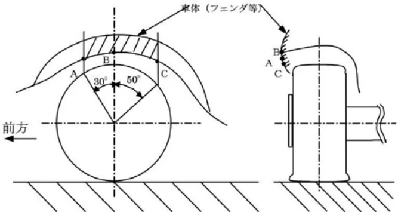</figure>
<p>第４−１図</p>
<p>④タイヤの溝は常に1.6mm 以上あること。</p>
<p>⑤いかなる場合であっても、タイヤに対する加工は許されない。</p>
<p>⑥タイヤのウォームアップ、溶剤塗布などは認められない。</p>
<p>⑦原則としてスパイクタイヤの使用は認められない。</p>
<p>⑧タイヤ内部に空気以外のものを充填することは禁止される。</p>
<h5 id="6-3-スペアホイール-2">6.3 ）スペアホイール</h5>
<p>車両には１本または複数のスペアホイールを搭載しなければならない（ただし、当初の車両に搭載されていない場合はこの限りではない）。スペアホイールは必ずしっかりと固定されていなければならない。</p>
<h5 id="第-7-条-制動装置-2">第 7 条  制動装置</h5>
<h5 id="7-1-主ブレーキ-2">7.1 ）主ブレーキ</h5>
<p>7.1.1 ）ブレーキライニング（パッド）については、変更することが許される。またその取り付け方式（リベット・接着等）を変更することも許される。</p>
<h5 id="7-1-2-ブレーキホースの変更は自由-2">7.1.2 ）ブレーキホースの変更は自由。</h5>
<p>7.1.3 ）バックプレート（保護用プレート）の取り外しまたは改造は自由。</p>
<p>7.1.4 ）リアブレーキへのプロポーショニングバルブの装着は、調整式のものを含み交換することは認められる。</p>
<p>7.1.5 ）ブレーキキャリパー内のピストンの背後にノックバック防止を目的としたスプリングを追加することは許される。</p>
<p>7.1.6 ）ホイール内に付着した泥を排除することを目的としたスクレッパーの取り付けは許される。</p>
<p>7.1.7 ）ブレーキキャリパー、ブレーキディスクの変更は自由、サイズの変更も認められるが以下に従うこと。ただし、カーボン製ブレーキディスクの使用は禁止される。</p>
<p>①キャリパーは、ブレーキコンポーネントメーカーから市販されている生産部品であること。ホイール毎に１つのキャリパーユニットのみであること。キャリパーハウジング／ボディにはスチールまたはアルミニウム製のみが認められる。キャリパーあたり最大４つのピストンまでとする。取り付けブラケットは自由に作成されてもよい。ブラケットを除いて、すべての部品は製品カタログまたは部品カタログから入手することができなければならない。チタンおよびセラミック材料は特に禁止される。</p>
<p>②ディスク（ローター）と取り付けベルは、通常入手可能な一般に販売されている部品（市販品）であること。ターマック用はディスクの最大直径355mmとする。グラベル用はディスクの最大直径300mmとする。すべての部</p>
<p><span class="pagemark" id="p26">P.26</span>品は製品カタログまたは部品カタログから入手することができなければならない。</p>
<h5 id="7-2-ハンドブレーキ-2">7.2 ）ハンドブレーキ</h5>
<p>レバーの改造は許されるが、当初の機能を維持し、駐車ブレーキは主ブレーキとは独立した系統でなければならない。油圧式ハンドブレーキの追加取りつけも認められる。</p>
<h5 id="第-8-条-操舵装置-2">第 8 条　操舵装置</h5>
<p>8.1 ）パワーステアリングとラックを繋いでいる配管を、第２章第１条に従った配管に変更することができる。</p>
<p>8.2 ）ステアリングホイールは、舵取装置の衝撃吸収装置に影響を与えないものであれば、ステアリングホイールハブを含み変更することができる。ただし、クイックリリースタイプは認められない。</p>
<h5 id="第-9-条-車体-2">第 9 条　車体</h5>
<h5 id="9-1-外-観">9.1 ）外　観</h5>
<h5 id="9-1-1-ホイールキャップは取り外さなければならない-2">9.1.1 ）ホイールキャップは取り外さなければならない。</h5>
<p>9.1.2 ）ヘッドライト保護用のカバーの取り付けは許されるが、いかなる場合でも空力特性並びに冷却特性に影響を及ぼすものであってはならない。</p>
<p>9.1.3 ）車体下部を保護することを目的とした空力効果を生じない保護体（アンダーガード等）の装着は認められる。</p>
<h5 id="9-1-4-前後ワイパーブレードの変更は許される-2">9.1.4 ）前後ワイパーブレードの変更は許される。</h5>
<p>9.1.5 ）空力装置については純正装着のものを取り外すことは許される。また交換、追加することも許されるが、その場合は公認書およびカタログに記載されているものを強く推奨される。また、第５編細則「アクセサリー等の自動車部品」の１に該当する部品については、取り付けが堅牢であることを含み、同細則「エア・スポイラの構造基準」に合致しているものであれば装着が認められる。</p>
<p>9.1.6 ）マッドフラップは、以下の条件で装着することができる。</p>
<p>①柔軟な材質でかつ排気管等と干渉してはならず、車体外側表面部位は外側に向けて尖っていたり、鋭い部分がないこと。</p>
<p>②それらは少なくともホイールの全幅を覆い、かつマッドフラップに覆われていない部分が車両の幅の１／３以上であること。</p>
<p>③リアホイールより前方に装着されるマッドフラップ（センターフラップ）の左右の間には、少なくとも20cmの間隔がなくてはならない。</p>
<p>④これらのマッドフラップの底部は、車両停止時に乗員なしで地表から10cm以上に位置してはならない。</p>
<p>⑤垂直投影面にあって、これらのマッドフラップは車体から突出していてはならない。</p>
<p>9.1.7 ）ルーフベンチレーター（サンルーフ）は、以下の条件で装着することが出来る。</p>
<p>①ルーフの開口部は（最低0.5mm厚の金属板、あるいは最低1mm厚のＣＦＲＰ、もしくは最低2mm厚のその他の堅固な不燃性の素材で）覆われていること。</p>
<p>②第5編細則「アクセサリー等の自動車部品」の1に該当する部品については、取り付けが堅牢であることを含み、同細則「エア・スポイラの構造基準」に合致しているものであれば装着が認められる。</p>
<h5 id="9-2-内-装-2">9.2 ）内　装</h5>
<p>9.2.1 ）前座席は後方に移動してもよいが、当初の後部座席の前縁を通る垂直面を超えてはならない。</p>
<p>9.2.2 ）後部座席および後部座席安全ベルトは取り外しても良い。</p>
<p>9.2.3 ）ダッシュボードとコンソールは当初のものを保持していなければならない（ロールケージ取り付けのための最小限の切除は除く）。メーカーラインオフ時から構成品が分割されていて、切り離しなどの改造が不要でかつ小物入れやオーディオなどのアクセサリー品を保持するためのものは取り外してもよい。</p>
<p>9.2.4 ）ドア内張りはドアの形状に変化が生じないことを条件としてドアから防音材を取り外すことが認められる。</p>
<p>内張りパネルは最低0.5mm厚の金属板、あるいは最低１mm厚のカーボンファイバー、もしくは最低２mm厚のその他の堅固な不燃性の素材で製作することができる。</p>
<p>サイドプロテクションバーの取り外しは許されない。</p>
<p>２ドア車の場合、後部側面ウィンドウより下に位置する内張りについても上記規則を適用する。</p>
<p>電動ウィンドウを手動ウィンドウに交換することが認められる。</p>
<p>手動ウィンドウを電動ウィンドウに交換することが認められる。</p>
<p>9.2.5 ）ルーフ、荷物室および乗員が着座しない空間の内張りとフロアーカーペットの取り外しは自由。</p>
<p>9.2.6 ）暖房装置は当初のものを保持していなければならない。ただし、エアコンの取り外しは配管およびコンプレッサー等を含み許される。</p>
<p><span class="pagemark" id="p27">P.27</span>9.2.7 ）２ボックス車の着脱式リアシェルフの取り外しは許される。</p>
<h5 id="9-3-追加アクセサリー-2">9.3 ）追加アクセサリー</h5>
<p>9.3.1 ）車両の美観または居住性向上などを目的としたアクセサリーは、車両の性能および特性に影響を与えない場合に限り取り付け、取り外しおよび変更が認められる。</p>
<p>9.3.2 ）操作性向上を目的としたペダルおよびシフトレバーの変更は、当初の原理および機構が保持されていれば認められる。フットレスト等の追加、変更は認められる。</p>
<p>9.3.3 ）各種メーター（モニター機能のみを目的とするものに限る）の追加、変更は認められる。</p>
<p>9.3.4 ）障がい者用操作装置の装着は認められる。ただし、健常者は使用しないこと。</p>
<h5 id="9-4-座-席-2">9.4 ）座　席</h5>
<p>変更する場合は下記の規定を満たすこと。</p>
<p>変更の有無に拘らず乗車定員分の座席を有すること。</p>
<p>①座席の幅×奥行は400mm×400mm以上確保すること。</p>
<p>②座席面上で座席前端より200mmの点から背もたれに平行な天井までの距離は800mm以上確保すること。</p>
<p>③座席および当該座席の取り付け装置は衝突時等に乗員から受ける衝撃力、慣性力等の荷重に耐えるものでなければならない。</p>
<p>④座席の後面部分（ヘッドレストを含む）は、衝突等で当該座席の後席乗員の頭部等が当たった場合に衝撃を吸収することができる構造でなければならない。</p>
<p>⑤追突等の衝撃を受けた場合に乗員の頭部が過度に後傾するのを抑止することができる装置（ヘッドレスト）を備えるかまたは座席自体が同等の効果を有する構造でなければならない。</p>
<p>⑥２名乗車車両のシートの車体フレームへの直付け（スライド機構無）は許される。</p>
<p>なお、変更する座席および座席取り付け装置は、上記のほかにＦＩＡ国際モータースポーツ競技規則付則Ｊ項第253条第16項２.３.４.５.座席の固定点および支持具を満たしたものでなければならない。</p>
<h5 id="9-5-補-強-2">9.5 ）補　強</h5>
<p>9.5.1 ）補強は、使用される材料が当初の形状に沿いそれと接触していれば修正加工を含み許される。複合材料による補強は第４－２図のように片面にのみ許される。また、車体、ならびにサイドシル・各メンバー等の空洞部を第４ －３図のように充填することにより補強することができる。</p>
<p>また、補修を目的とした溶接等は認められる。</p>
<figure></figure>
<figure>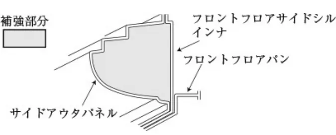</figure>
<p>第４−２図　　　　　　　　　　　 　　第４−３図</p>
<p>9.5.2 ）車体のサスペンション取り付け部を繋ぐ取り外し可能な（ボルトによる取り付け）補強バーの取り付けは許される。ただし、その取り付け点はサスペンションの取り付け点から100mm以内であること。また、メーカーラインオフ時に標準装着されているタワーバーについては、取り付け点を変更しなければ他のものに変更できる。</p>
<p>9.5.3 ）スペアタイヤのサイズを変更したことによって、当初の格納カバーが装着できない場合はそれを取り除くことができる。</p>
<p>9.5.4 ）マフラーの補強は脱落防止、破損防止を目的としたものであれば許される。</p>
<h5 id="第-10-条-電気系統-2">第 10 条　電気系統</h5>
<h5 id="10-1-電-装-2">10.1 ）電　装</h5>
<p>10.1.1 ）バッテリーは当初の搭載位置並びに電圧を保持していれば形状、容量、バッテリーケーブルは自由。バッテリーケーブルを室内配線に変更することは許される。</p>
<p>10.1.2 ）ダイナモをオルタネーターに変更すること（またその逆）は許されないが、発電容量の大きいものへの変更は認められる。</p>
<h5 id="10-1-3-電気系統のヒューズの追加は認められる-2">10.1.3 ）電気系統のヒューズの追加は認められる。</h5>
<h5 id="10-2-灯-火-2">10.2 ）灯　火</h5>
<h5 id="10-2-1-前照灯-2"><span class="pagemark" id="p28">P.28</span>10.2.1 ）前照灯</h5>
<p>走行用前照灯（ハイビーム）は公道走行要件を満たすことを条件に追加、変更が認められる。ただし、乗用車の外部突起に係る協定規則第２６号に適合していること。</p>
<h5 id="10-2-2-前部霧灯-フォグランプ-2">10.2.2 ）前部霧灯（フォグランプ）</h5>
<p>追加、変更は認められるが、取り付けのためやむを得ずバンパー等を切除する場合は、必要最小限の範囲にとどめること。また前部霧灯の取り付け、取り外しに伴う全長の変化は、自動車検査証の長さ欄に記載されている数値から±３cmの範囲でなければならない。また、いかなる場合も下記の基準を満たしていなければならない。</p>
<p>①同時に３個以上点灯する構造のものでないこと。</p>
<p>②照射光線は他の交通を妨げないものであること。</p>
<p>③照明部の上縁の高さが地上0.8ｍ以下であって、すれ違い用前照灯の照明部の上縁を含む水平面以下、下縁の高さが地上0.25ｍ以上となるように取り付けられていること。</p>
<p>④照明部の最外縁は、自動車の最外側から400mm以内となるように取り付けられていること。</p>
<p>⑤灯火の色は白色または淡黄色であり、そのすべてが同一であること。</p>
<p>⑥前部霧灯は左右同数であり（前部霧灯を１個備える場合を除く）、かつ前面が左右対称である自動車に備えるものにあっては、車両中心面に対して対称の位置に取り付けられたものであること。</p>
<p>⑦取り付け部は、照射光線の方向が振動、衝撃等により容易にくるわない構造であること。</p>
<h5 id="10-2-3-後退灯-2">10.2.3 ）後退灯</h5>
<p>後退灯は、ギアレバーの後退と必ず連動していること。</p>
<h5 id="第-11-条-燃料回路-2">第 11 条　燃料回路</h5>
<p>燃料タンクは燃料ポンプ、燃料配管を含みメーカーラインオフ状態を維持すること。</p>
<h5 id="第-12-条-ジャッキ-2">第 12 条　ジャッキ</h5>
<p>ジャッキアップポイントの補強、移動、追加は認められるが、あくまでもその改造はジャッキアップを目的としたものに限定される。</p>
<h3 id="第-章-車両用改造規定-3"><span class="pagemark" id="p29">P.29</span>第５章　ＲＰＮ車両用改造規定</h3>
<h5 id="第-1-条-一般改造規定">第 1 条　一般改造規定</h5>
<h3 id="第-章一般規定-第-章の安全規定および本章の一般改造規定で課せられている以外-すべての改造は禁止">第１章一般規定、第２章の安全規定および本章の一般改造規定で課せられている以外、すべての改造は禁止される。</h3>
<p>車両の構成要素は当初の機能を保持しなければならない。本規定によって許可されていないすべての改造は、明確に禁止される。</p>
<p>ＪＡＦ登録車両と同一車両型式に設定されている純正部品およびメーカーオプションで、改造および加工の必要なく取り付けられるものであれば使用が認められるが、改造の範囲や許可される取付けは下記（第２条〜第９条）に規定される。</p>
<h5 id="第-2-条-エンジン">第 2 条　エンジン</h5>
<p>2.1 ）エンジンマウント：エンジンおよびギアボックスの取付けマウントの部材は同一材質で形状・硬度を変更することは自由。</p>
<h5 id="2-2-点火装置">2.2 ）点火装置</h5>
<p>2.2.1 ）スパークプラグ、ハイテンションコードの銘柄、型式は自由。</p>
<h5 id="2-3-吸気装置">2.3 ）吸気装置</h5>
<p>2.3.1 ）フィルター：フィルターカートリッジの変更は、当初のものと同一の方式のものであれば認められる。</p>
<h5 id="2-4-冷却装置">2.4 ）冷却装置</h5>
<p>2.4.1 ）サーモスタットおよび冷却ファンの作動開始時の温度は制御方式を含み自由。</p>
<h5 id="2-4-2-ラジエターキャップの変更が許される">2.4.2 ）ラジエターキャップの変更が許される。</h5>
<h5 id="第-3-条-シャシー">第 3 条　シャシー</h5>
<p>3.1 ）最低地上高：９cm（アンダーガードを含む）とする。また、車両の１つの側面のすべてのタイヤの空気が抜けた場合であっても、車両のいかなる部分も地表に接してはならない。このテストは出走状態で（ドライバーが搭乗し）平坦な面上で行われる。</p>
<p>3.2 ）ラバーマウントおよびブッシュ：ラバーブッシュは材質の変更が無いことを条件に硬度、形状の変更が許される。ただし、マフラーマウント（取付具）を除き、取付軸は変更しないこと。</p>
<h5 id="第-4-条-駆動装置">第 4 条　駆動装置</h5>
<p>4.1 ）クラッチ：クラッチディスクおよびクラッチカバーは、数および直径を除き変更することができる。ただし、カーボン製（カーボン含有率がすべてを占めるもの）の使用は認められない。</p>
<h5 id="4-2-シフトレバー-シフトノブの変更は許される">4.2 ）シフトレバー：シフトノブの変更は許される。</h5>
<p>4.3 ）ディファレンシャル：フロント・センター・リアディファレンシャルは、数を変更しなければボルトオンで取付けられるリミテッドスリップデフ（ビスカスカップリングを含む）を取付けることができる。ただし、元のケースを使用すること。また、これに関連するドライブシャフトは、同一車両型式内に使用されているものであれば変更することができる。</p>
<p>4.4 ）最終減速比：ギア比の変更は、同一車両型式に設定されている純正部品およびメーカーオプションで、改造および加工の必要なく取り付けられるものであればボルトオンを条件に許される。</p>
<h5 id="第-5-条-サスペンション-3">第 5 条　サスペンション</h5>
<p>材料の追加によるサスペンションおよびその取付け部の補強を認める。サスペンションの補強部が、中空体を作ることになってはならない。部分的であっても、全体的であっても複合素材（カーボンコンポジット）から成るサスペンション部材は禁止される。</p>
<p>5.1 ）スプリング：数は、スプリングを連続して取付けることを条件として自由。</p>
<p>長さ、コイルの巻数、ワイヤーの直径、外径、スプリングの種類も自由。ただし、下記に従うこと。</p>
<p>スプリングの形状は、調整できる構造部分がスプリングシートの一部で、当初のサスペンション部分または車体部分から分離している（取外せる）場合、スプリングシートは調節できるものであっても良い。</p>
<p>①ばねに損傷があり、左右のばねのたわみに著しい不同がないこと。</p>
<p><span class="pagemark" id="p30">P.30</span>②溶接、肉盛または加熱加工を行わないこと。</p>
<p>③ばねの端部がブラケットから離脱しない（遊びがない）こと。</p>
<p>④切断等によりばねの一部または全部を除去しないこと。</p>
<p>⑤ばねの機能を損なうおそれのある締付具を有さないこと。</p>
<p>⑥ばねの取付け方法はその機能を損なうおそれのないこと。</p>
<p>5.2 ）ショックアブソーバー：材質を含み自由。ただし、カーボン材は使用できない。車高調整機構（ネジ式、Ｃリング等）を伴うものに変更（使用）することができる。別タンク式（別タンクの車体への取付けは許されない）のものに変更（使用）すること、アッパーマウントをピロボール（キャンバー調整機構のみ付加されたものを含む）に変更することができる。ただし、それらの数、形式、作動原理は変更してはならない。遠隔操作による減衰力調整機構への変更は許されない。</p>
<p>5.3 ）スタビライザー：ブッシュ・ブラケット（リンクを含む）を含み変更することができるが、取付けはボルトオンによるものとし、車室内から調整可能であってはならない。新規取付および取外すことは許されない。</p>
<h5 id="第-6-条-制動装置">第 6 条　制動装置</h5>
<p>6.1 ）ブレーキパッド：ブレーキシュー、ライニングパッドの材質変更を含み交換、変更は許される。ただし、カーボン材（カーボン含有率がすべてを占めるもの）は使用できない。</p>
<p>6.2 ）バックプレート：保護用プレートは取外したり曲げても良い。</p>
<p>6.3 ）その他：ブレーキディスクやホイールに集積した泥をかき出す装置を追加しても良い。ブレーキキャリパー内のピストンの背後にノックバック防止を目的としたスプリングの追加が許される。また、マスターシリンダーストッパーを追加することができる。</p>
<h5 id="第-7-条-タイヤおよびホイール">第 7 条　タイヤおよびホイール</h5>
<h5 id="7-1-ホイール">7.1 ）ホイール</h5>
<p>下記条件を満たしたホイールの使用が許される。</p>
<p>①ＲＰＮ車両に装着するホイールは、同一車両型式のカタログに記載されているホイールの直径および幅がカタログに記載されている数値を最大値とすることができる。（ただし、上記以外の最大値を選手権統一規則または特別規則書等により規定することができる。）</p>
<p>②部分的であっても複合素材から成るホイールの使用は禁止する。</p>
<p>③ホイールの材質はスチール製またはＪＷＬマークのある軽合金製（アルミ合金製、マグネシウム合金製など）とする。</p>
<p>④ホイールナットの材質および形状の変更は許されるが、ホイールスペーサーの使用は認められない。（メーカーラインオフ時もしくは純正オプションに設定される部品を除く）</p>
<p>ホイールに間隔保持のための部材を溶接することはホイールスペーサーの使用とみなされる。また、アクスルハブに間隔保持のための部材を取り付けることは、その取り付け方法の如何にかかわらずホイールスペーサーの使用とみなされる。</p>
<p>⑤ホイールの寸法を小さくすることは許される。</p>
<p>⑥いかなる場合にも、車両のトレッドを拡大することは認められない。ただし、ホイールの変更に伴う最小限のトレッドの変化は許される。</p>
<p>⑦ホイールに追加される排風装置の装着は認められない。</p>
<h5 id="7-2-タイヤ">7.2 ）タイヤ</h5>
<p>前項規定に合致したホイールを適用リムとし、これに装着できるタイヤとしてＪＡＴＭＡ ＹＥＡＲ ＢＯＯＫに記載されているもの、またはこれと同等なものであり、かつ下記の条件を満たしていなければならない。</p>
<p>①公道走行が認められている一般市販タイヤおよびラリー用として認められたＦＩＡ公認タイヤ（注１）に限られる。競技専用タイヤの使用はいかなる場合でも認められない（注１は除く）。</p>
<p>②タイヤおよびホイールは、静止状態において地表以外の部分と接触してはならない。</p>
<p>③タイヤおよびホイールは、フェンダーからはみ出さないこと。（第５−１図参照）</p>
<figure><span class="pagemark" id="p31">P.31</span>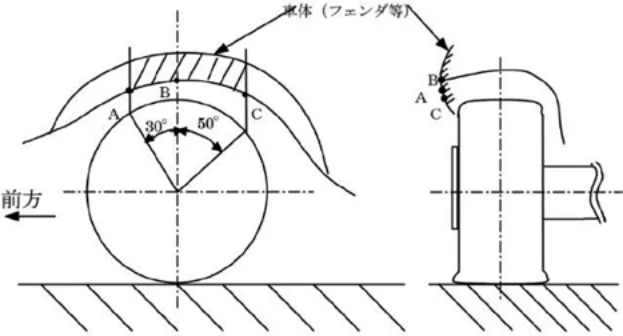</figure>
<p>第５－１図</p>
<p>④タイヤの溝は常に1．6mm 以上あること。</p>
<p>⑤いかなる場合であっても、タイヤに対する加工は許されない。</p>
<p>⑥タイヤのウォームアップ、溶剤塗布などは認められない。</p>
<p>⑦原則としてスパイクタイヤの使用は認められない。</p>
<p>⑧タイヤ内部に空気以外のものを充填することは禁止される。</p>
<h5 id="7-3-スペアホイール">7.3 ）スペアホイール</h5>
<p>車両には１本または複数のスペアホイールを搭載しなければならない（ただし、当初の車両に搭載されていない場合はこの限りではない）。スペアホイールは必ずしっかりと固定されていなければならない。</p>
<h5 id="第-8-条-車体">第 8 条　車体</h5>
<p>車体まわりおよび車室内に追加・変更等する蓋然性が高く、安全の確保および公害の防止上支障がない第５編細則に定める「アクセサリー等の自動車部品」の取付け、取外し、変更が許される。</p>
<h5 id="8-1-車体外部">8.1 ）車体外部</h5>
<p>8.1.1）〜8.1.4）を簡易的（蝶ねじ等）または固定的（ボルト、ナット等）に取り付ける場合を除き、全長、全幅および全高は変更しないこと。</p>
<h5 id="8-1-1-空力装置">8.1.1 ）空力装置</h5>
<h2 id="第-編細則-アクセサリー等の自動車部品-に示された空気流を調整するための前後スポイラーを新たに装">第５編細則「アクセサリー等の自動車部品」に示された空気流を調整するための前後スポイラーを新たに装着、</h2>
<p>交換することができる。ただし、何れの場合でも下記事項に留意すること。</p>
<p>①最低地上高</p>
<p>②鋭い突起を有していないこと。</p>
<p>③振動、衝撃等により緩みを生じないこと。</p>
<p>④第５編細則に定める「エア・スポイラの構造基準」を参照すること。</p>
<p>また、内部構造が剥き出しにならないことを条件にフロント・リアスポイラー、サイドスカート（フロントフェンダーアーチ後端からリアフェンダーアーチ前端までのサイドステップ部分）およびリアスカートの部品を取外すことができる。</p>
<p>8.1.2 ）フロントスポイラー：装着・変更が許される。ただし、一体型を含みバンパーの変更は許されない。</p>
<p>8.1.3 ）リアスポイラー：装着・変更が許される。ただし、トランクおよびリアゲートとの一体型は許されない。</p>
<p>8.1.4 ）サイドスカート：装着・変更が許される。（フロントフェンダーアーチ後端からリアフェンダーアーチ前端までのサイドステップ部分）</p>
<h5 id="8-1-5-マッドフラップ">8.1.5 ）マッドフラップ</h5>
<p>マッドフラップは以下の条件の下で装着することができる。</p>
<p>－柔軟な材質で作られていなくてはならない。</p>
<p>－排気管等に干渉してはならず、車体外側表面部位は外側に向けて尖っていたり、鋭い部分がないこと。</p>
<p>－それらは各ホイールの少なくとも全幅を覆っていなくてはならないが、前輪、後輪の後方ではマッドフラップに覆われていない部分が車両の幅の１／３以上あること（第４−１図を参照）。</p>
<figure><span class="pagemark" id="p32">P.32</span>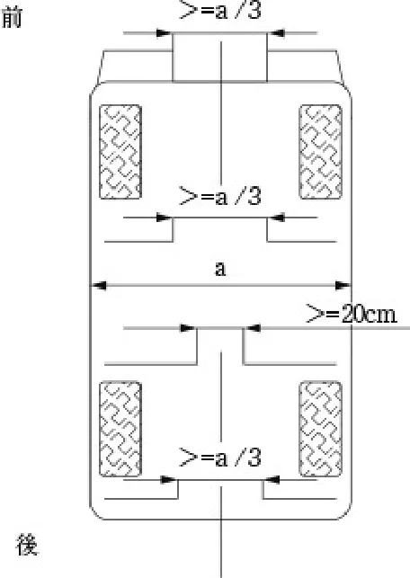</figure>
<p>第4−1図</p>
<p>－リアホイールの前方のマッドフラップの左右の間には、少なくとも20cmの隙間がなくてはならない。</p>
<p>－これらのマッドフラップの底部は、車両に誰も乗車せず、停止した状態で、地表から10cm以上の所にあってはならない。</p>
<p>－垂直投影面にあって、これらのマッドフラップは車体から突出していてはならない。</p>
<p>前方へのはねを防ぐためのマッドフラップは、柔軟な材質で作られ、競技の特別規則書がそれらを認めるか、要請する時に車両の前部へ取付けることができる。それらは、車両の全幅より突出していてはならず、また当初の全長より10cm以上長いものであってはならない。また、フロントホイールの前方ではマッドフラップに覆われていない部分が車両の幅の少なくとも１／３以上なければならない。</p>
<h5 id="8-1-6-アンダーガード">8.1.6 ）アンダーガード</h5>
<p>車体下部を保護することを目的とした空力効果を生じない取り外し可能な保護体を取付けることが許される。</p>
<h5 id="8-2-車体内部">8.2 ）車体内部</h5>
<p>8.2.1 ）コクピット：次の付属品のみ取付けが許される。スペアコンプリートホイール、工具、安全装置、通信装置。</p>
<p>コクピット内に位置するヘルメットと工具の収納容器は、非可燃性の材質で作られていなければならない。それは火災の場合に有毒ガスを発生してはならない。</p>
<p>8.2.2 ）換気装置：オリジナルの換気装置（デフロスター、ヒーター）を保持しなければならない。</p>
<p>8.2.3 ）エアコン：全車標準装備とされているエアコンについては、取り外しは認められない。</p>
<p>8.2.4 ）内装：車室内の見える範囲のすべての部品は削除することができない。ただし、下記に記載されたものを除く。</p>
<p>①フロアマット類およびアンダーコート</p>
<p>②ネジ等のカバー類</p>
<p>③元の座席位置に隔壁（8.2.11）を設置することにより運転席と空気の流入が遮断された車室外となる内装。</p>
<p>④ロールバーの装着に伴う最小限の内装切除。</p>
<p>⑤２ボックス車の着脱式リアシェルフは取外しても良い。</p>
<p>8.2.5 ）ステアリングホイール：下記の条件を満たしたものと交換することができる。</p>
<p>①スポーク部とボス部は堅固な取付け構造とし、衝撃を受けた場合に容易に脱落する恐れのないこと。</p>
<p>②計器盤の視認性を阻害しない形状をしていること。</p>
<p>③光の反射による運転の妨げとなるような部分がないこと。</p>
<p>④ステアリングホイールの変更により、かじ取装置の衝撃吸収装置に影響を与えるものでないこと。</p>
<p>⑤クイックリリースタイプでないこと。</p>
<p>8.2.6 ）フットレスト・ペダルカバーおよびヒールプレート等：装着することができる。ただし、確実に取付けること。</p>
<p>8.2.7 ）追加アクセサリー：車両の美観または居住性に関する付属品（照明、暖房、ラジオ等）といった、車両の動きにいかなる影響も及ぼさないものはすべて、制限なく認められる。ただし、これらの付属品が、例え間接的であっても、エンジン、ステアリング、強度、トランスミッション、ブレーキ、ロードホールディングの効率に影響を及</p>
<p><span class="pagemark" id="p33">P.33</span>ぼすことがないという条件の下に限る。</p>
<p>グローブボックスに追加区画を設けたり、ドアにポケットを追加することができる。ただし、オリジナルのパネルを使用すること。</p>
<p>8.2.8 ）一般消耗品：次の消耗品は、変更（同等品）が許される。</p>
<p>12Ｖバッテリー、オイルフィルター、エアフィルター、ワイパーブレード、バルブ等。</p>
<p>8.2.9 ）障がい者用操作装置：障がい者用操作装置を装着することができる。ただし、健常者は使用しないこと。</p>
<p>8.2.10 ）座席：変更することが許される。変更する場合は下記の規定を満たすこと。変更の有無に拘わらず乗車定員分の座席を有すること。</p>
<p>①座席の幅×奥行は400mm×400mm以上確保すること。</p>
<p>②座席面上で座席前端より200mmの点から背もたれに平行な天井までの距離は800mm以上確保すること。</p>
<p>③座席および当該座席の取付け装置は衝突時等に乗員から受ける衝撃力、慣性力等の荷重に耐えるものでなければならない。</p>
<p>④座席の後面部分（ヘッドレストを含む）は、衝突等で当該座席の後席乗員の頭部等が当たった場合に衝撃を吸収することができる構造でなければならない。</p>
<p>⑤追突等の衝撃を受けた場合に乗員の頭部が過度に後傾するのを抑止することができる装置（ヘッドレスト）を備えるかまたは座席自体が同等の効果を有する構造でなければならない。</p>
<p>なお、変更する座席および座席取り付け装置は、上記のほかにＦＩＡ国際モータースポーツ競技規則付則Ｊ項第253条第１６項２.３.４.５.座席の固定点および支持具を満たしたものであることが強く推奨される。</p>
<p>8.2.11 ）隔壁：ロールバーの装着による乗車定員変更に伴い後部座席を除去した場合、難燃性の隔壁板を溶接、リベットおよびビスにより取付けることができる。ただし、隔壁板は後方視界に支障が出ない範囲に設置され、ロールバーやタワーバーと連結されてはならない。</p>
<h5 id="8-3-補強">8.3 ）補強</h5>
<p>8.3.1 ）補強は、使用される材料が当初の形状に沿いそれと接触していれば修正加工を含み許される。複合材料による補強は第５－２図のように片面にのみ許される。また、車体、ならびにサイドシル・各メンバー等の空洞部を第５ −３図のように充填することにより補強することができる。</p>
<p>また、補修を目的とした溶接等は認められる。</p>
<figure>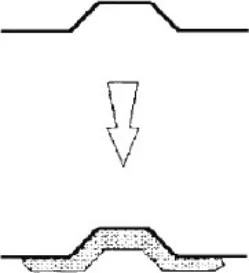</figure>
<figure></figure>
<p>第5－2図　　　　　　　　　　　　　第5－3図</p>
<p>8.3.2 ）車体のサスペンション取り付け部を繋ぐ取り外し可能な（ボルトによる取り付け）補強バーの取り付けは許される。ただし、その取り付け点はサスペンションの取り付け点から100ｍｍ以内であること。また、メーカーラインオフ時に標準装備されているタワーバーについては、取り付け点を変更しなければ他のものに変更できる。</p>
<p>8.3.3 ）スペアタイヤのサイズを変更したことによって、当初の格納カバーが装着できない場合はそれを取り除くことができる。</p>
<p>8.3.4 ）マフラーの補強は脱落防止、破損防止を目的としたものであれば許される。</p>
<h5 id="第-9-条-電気系統">第 9 条　電気系統</h5>
<h5 id="9-1-灯火">9.1 ）灯火</h5>
<h5 id="9-1-1-前照灯">9.1.1 ）前照灯</h5>
<p>走行用前照灯（ハイビーム）は公道走行要件を満たすことを条件に追加、変更が認められる。ただし、乗用車の外部突起に係る協定規則第２６号に適合していること。</p>
<h5 id="9-1-2-前部霧灯-フォグランプ">9.1.2 ）前部霧灯（フォグランプ）</h5>
<p>追加、変更は認められるが、取り付けのためやむを得ずバンパー等を切除する場合は、必要最小限の範囲にとどめること。また前部霧灯の取り付け、取り外しに伴う全長の変化は、自動車検査証の長さ欄に記載されている数値</p>
<p><span class="pagemark" id="p34">P.34</span>から±３cmの範囲でなければならない。また、いかなる場合も下記の基準を満たしていなければならない。</p>
<p>①同時に３個以上点灯する構造のものでないこと。</p>
<p>②照射光線は他の交通を妨げないものであること。</p>
<p>③照明部の上縁の高さが地上0．8ｍ以下であって、すれ違い用前照灯の照明部の上縁を含む水平面以下、下縁の高さが地上0．25ｍ以上となるように取り付けられていること。</p>
<p>④照明部の最外縁は、自動車の最外側から400mm以内となるように取り付けられていること。</p>
<p>⑤灯火の色は白色または淡黄色であり、そのすべてが同一であること。</p>
<p>⑥前部霧灯は左右同数であり（前部霧灯を１個備える場合を除く）、かつ前面が左右対称である自動車に備えるものにあっては、車両中心面に対して対称の位置に取り付けられたものであること。</p>
<p>⑦取り付け部は、照射光線の方向が振動、衝撃等により容易にくるわない構造であること。</p>
<h3 id="第-章-車両用改造規定-4"><span class="pagemark" id="p35">P.35</span>第６章　ＡＥ車両用改造規定</h3>
<h5 id="第-条-一般改造規定">第１条　一般改造規定</h5>
<h3 id="第-章一般規定-第-章の安全規定および本章の一般改造規定で課せられている以外-すべての改造は禁止-2">第１章一般規定、第２章の安全規定および本章の一般改造規定で課せられている以外、すべての改造は禁止される。</h3>
<p>車両の構成要素は当初の機能を保持しなければならない。本規定によって許可されていないすべての改造は、明確に禁止される。</p>
<p>ＪＡＦ登録車両と同一車両型式に設定されている純正部品およびメーカーオプションで、改造および加工の必要なく取り付けられるものであれば使用が認められるが、改造の範囲や許可される取付けは下記（第２条〜第９条）に規定される。</p>
<h5 id="第-条-電気モーター-エンジン">第２条　電気モーター、エンジン</h5>
<p>2.1 ）電気モーターおよびエンジンのマウント：電気モーター、エンジンおよびミッションの取付けマウントの部材は同一材質で形状・硬度を変更することは自由。</p>
<h5 id="2-2-電子制御装置">2.2 ）電子制御装置</h5>
<p>変更は許されるが、変更されたユニットは当初のものと完全に互換性がなければならない。すなわち、いかなる場合であっても当該ユニットを量産ユニットと交換してエンジンおよび電気モーターが正常に稼動しなければならず、入力側のセンサーおよびアクチュエーターはその機能を含みメーカーラインオフ状態の仕様と同一であること。</p>
<p>2.3 ）データロギング（エンジン制御データ、及び実走行データ記録装置）</p>
<p>データロギングシステムの使用は認められるが、入力側のセンサーはその機能を含みメーカーラインオフ状態の仕様であること。ただし、水温、油温、油圧、エンジン回転についてはセンサーの追加も認められる。</p>
<p>ケーブルリンクおよびチップカード以外の方法による車両のデータ変更は認められない。</p>
<h5 id="2-4-潤滑油系統">2.4 ）潤滑油系統</h5>
<p>オイルクーラーの変更、及び取付けも認められる。ただし、新たに取り付ける場合は配管は第２章第１条に従った配管とすること。</p>
<h5 id="2-5-点火装置">2.5 ）点火装置</h5>
<p>2.5.1 ）スパークプラグ、ハイテンションコードの銘柄、型式は自由。</p>
<h5 id="2-6-吸気装置">2.6 ）吸気装置</h5>
<p>2.6.1 ）フィルター：フィルターカートリッジの変更は、当初のものと同一の方式のものであれば認められる。</p>
<h5 id="2-7-冷却装置">2.7 ）冷却装置</h5>
<p>2.7.1 ）サーモスタットおよび冷却ファンの作動開始時の温度は制御方式を含み自由。</p>
<h5 id="2-7-2-ラジエターキャップの変更が許される">2.7.2 ）ラジエターキャップの変更が許される。</h5>
<p>2.7.3 ）走行用バッテリー、インバーター等の冷却装置の追加および変更は認められる。</p>
<h5 id="第-条-シャシー">第３条　シャシー</h5>
<p>3.1 ）最低地上高：９cｍ（アンダーガードを含む）とする。また、車両の１つの側面のすべてのタイヤの空気が抜けた場合であっても、車両のいかなる部分も地表に接してはならない。このテストは出走状態で（ドライバーが搭乗し）平坦な面上で行われる。</p>
<p>3.2 ）ラバーマウントおよびブッシュ：ラバーブッシュは材質の変更が無いことを条件に硬度、形状の変更が許される。ただし、マフラーマウント（取付具）を除き、取付軸は変更しないこと。</p>
<h5 id="第-条-駆動装置">第４条　駆動装置</h5>
<p>4.1 ）クラッチ：クラッチディスクおよびクラッチカバーは、数および直径を除き変更することができる。ただし、カーボン製（カーボン含有率がすべてを占めるもの）の使用は認められない。</p>
<h5 id="4-2-シフトレバー-シフトノブの変更は許される-2">4.2 ）シフトレバー：シフトノブの変更は許される。</h5>
<p>4.3 ）ディファレンシャル：フロント・センター・リアディファレンシャルは、数を変更しなければボルトオンで取付けられるリミテッドスリップデフ（ビスカスカップリングを含む）を取付けることができる。ただし、元のケースを使用すること。また、これに関連するドライブシャフトは、同一車両型式内に使用されているものであれば変更することができる。</p>
<p><span class="pagemark" id="p36">P.36</span>4.4 ）最終減速比：ギア比の変更は、同一車両型式に設定されている純正部品およびメーカーオプションで、改造および加工の必要なく取り付けられるものであればボルトオンを条件に許される。</p>
<h5 id="第-条-サスペンション">第５条　サスペンション</h5>
<p>材料の追加によるサスペンションおよびその取付け部の補強を認める。サスペンションの補強部が、中空体を作ることになってはならない。部分的であっても、全体的であっても複合素材（カーボンコンポジット）から成るサスペンション部材は禁止される。</p>
<p>5.1 ）スプリング：数は、スプリングを連続して取付けることを条件として自由。</p>
<p>長さ、コイルの巻数、ワイヤーの直径、外径、スプリングの種類も自由。ただし、下記に従うこと。</p>
<p>スプリングの形状は、調整できる構造部分がスプリングシートの一部で、当初のサスペンション部分または車体部分から分離している（取外せる）場合、スプリングシートは調節できるものであっても良い。</p>
<p>①ばねに損傷があり、左右のばねのたわみに著しい不同がないこと。</p>
<p>②溶接、肉盛または加熱加工を行わないこと。</p>
<p>③ばねの端部がブラケットから離脱しない（遊びがない）こと。</p>
<p>④切断等によりばねの一部または全部を除去しないこと。</p>
<p>⑤ばねの機能を損なうおそれのある締付具を有さないこと。</p>
<p>⑥ばねの取付け方法はその機能を損なうおそれのないこと。</p>
<p>5.2 ）ショックアブソーバー：材質を含み自由。ただし、カーボン材は使用できない。車高調整機構（ネジ式、Ｃリング等）を伴うものに変更（使用）することができる。また、アッパーマウントをピロボール（キャンバー調整機構のみ付加されたものを含む）に変更することができる。ただし、それらの数、形式、作動原理は変更してはならず、別タンクの車体への取付けを含み、別タンク式のものに変更（使用）することができる。</p>
<p>遠隔操作による減衰力調整機構への変更は許されない。</p>
<p>5.3 ）スタビライザー：ブッシュ・ブラケット（リンクを含む）を含み変更することができるが、取付けはボルトオンによるものとし、車室内から調整可能であってはならない。新規取付および取外すことは許されない。</p>
<h5 id="第-条-制動装置">第６条　制動装置</h5>
<p>6.1 ）ブレーキパッド：ブレーキシュー、ライニングパッド材質変更を含み交換、変更は許される。ただし、カーボン材（カーボン含有率がすべてを占めるもの）は使用できない。</p>
<p>6.2 ）バックプレート：保護用プレートは取外したり曲げても良い。</p>
<p>6.3 ）その他：ブレーキディスクやホイールに集積した泥をかき出す装置を追加しても良い。ブレーキキャリパー内のピストンの背後にノックバック防止を目的としたスプリングの追加が許される。また、マスターシリンダーストッパーを追加することができる。</p>
<h5 id="第-条-タイヤおよびホイール">第７条　タイヤおよびホイール</h5>
<h5 id="7-1-ホイール-2">7.1 ）ホイール</h5>
<p>下記条件を満たしたホイールの使用が許される。</p>
<p>①ＡＥ車両に装着するホイールは、同一車両型式のカタログに記載されているホイールの直径および幅が下記の数値を最大値とすることができる。（ただし、上記以外の最大値を選手権統一規則または特別規則書等により規定することができる。）</p>
<p>②部分的であっても複合素材から成るホイールの使用は禁止する。</p>
<p>③ホイールの材質はスチール製またはＪＷＬマークのある軽合金製（アルミ合金製、マグネシウム合金製など）とする。</p>
<p>④ホイールナットの材質および形状の変更は許されるが、ホイールスペーサーの使用は認められない。（メーカーラインオフ時もしくは純正オプションに設定される部品を除く）</p>
<p>ホイールに間隔保持のための部材を溶接することはホイールスペーサーの使用とみなされる。また、アクスルハブに間隔保持のための部材を取り付けることは、その取り付け方法の如何にかかわらずホイールスペーサーの使用とみなされる。</p>
<p>⑤ホイールの寸法を小さくすることは許される。</p>
<p>⑥いかなる場合にも、車両のトレッドを拡大することは認められない。ただし、ホイールの変更に伴う最小限のト</p>
<p><span class="pagemark" id="p37">P.37</span>レッドの変化は許される。</p>
<p>⑦ホイールに追加される排風装置の装着は認められない。</p>
<h5 id="7-2-タイヤ-2">7.2 ）タイヤ</h5>
<p>前項規定に合致したホイールを適用リムとし、これに装着できるタイヤとしてJATMA YEAR BOOKに記載されているもの、またはこれと同等なものであり、かつ下記の条件を満たしていなければならない。</p>
<p>①公道走行が認められている一般市販タイヤおよびラリー用として認められたＦＩＡ公認タイヤ（注１）に限られる。競技専用タイヤの使用はいかなる場合でも認められない（注１は除く）。</p>
<p>②タイヤおよびホイールは、静止状態において地表以外の部分と接触してはならない。</p>
<p>③タイヤおよびホイールは、フェンダーからはみ出さないこと。（第６−１図参照）</p>
<figure>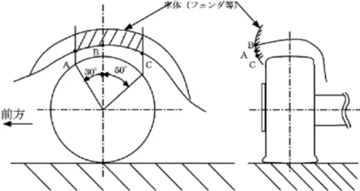</figure>
<p>第６－１図</p>
<p>④タイヤの溝は常に1.6mm 以上あること。</p>
<p>⑤いかなる場合であっても、タイヤに対する加工は許されない。</p>
<p>⑥タイヤのウォームアップ、溶剤塗布などは認められない。</p>
<p>⑦原則としてスパイクタイヤの使用は認められない。</p>
<p>⑧タイヤ内部に空気以外のものを充填することは禁止される。</p>
<h5 id="7-3-スペアホイール-2">7.3 ）スペアホイール</h5>
<p>車両には１本または複数のスペアホイールを搭載しなければならない（ただし、当初の車両に搭載されていない場合はこの限りではない）。スペアホイールは必ずしっかりと固定されていなければならない。</p>
<h5 id="第-条-車体">第８条　車体</h5>
<p>車体まわりおよび車室内に追加・変更等する蓋然性が高く、安全の確保および公害の防止上支障がない第５編細則に定める「アクセサリー等の自動車部品」の取付け、取外し、変更が許される。</p>
<h5 id="8-1-車体外部-2">8.1 ）車体外部</h5>
<p>8.1.1）〜8.1.4）を簡易的（蝶ねじ等）または固定的（ボルト、ナット等）に取り付ける場合を除き、全長、全幅および全高は変更しないこと。</p>
<h5 id="8-1-1-空力装置-2">8.1.1 ）空力装置</h5>
<h2 id="第-編細則-アクセサリー等の自動車部品-に示された空気流を調整するための前後スポイラーを新たに装-2">第５編細則「アクセサリー等の自動車部品」に示された空気流を調整するための前後スポイラーを新たに装着、</h2>
<p>交換することができる。ただし、何れの場合でも下記事項に留意すること。</p>
<p>①最低地上高</p>
<p>②鋭い突起を有していないこと。</p>
<p>③振動、衝撃等により緩みを生じないこと。</p>
<p>④第５編細則に定める「エア・スポイラの構造基準」を参照すること。</p>
<p>また、内部構造が剥き出しにならないことを条件にフロント・リアスポイラー、サイドスカート（フロントフェンダーアーチ後端からリアフェンダーアーチ前端までのサイドステップ部分）およびリアスカートの部品を取外すことができる。</p>
<p>8.1.2 ）フロントスポイラー：装着・変更が許される。ただし、一体型を含みバンパーの変更は許されない。</p>
<p>8.1.3 ）リアスポイラー：装着・変更が許される。ただし、トランクおよびリアゲートとの一体型は許されない。</p>
<p>8.1.4 ）サイドスカート：装着・変更が許される。（フロントフェンダーアーチ後端からリアフェンダーアーチ前端までのサイドステップ部分）</p>
<h5 id="8-1-5-マッドフラップ-2">8.1.5 ）マッドフラップ</h5>
<p>マッドフラップは以下の条件の下で装着することができる。</p>
<p><span class="pagemark" id="p38">P.38</span>−柔軟な材質で作られていなくてはならない。</p>
<p>−排気管等に干渉してはならず、車体外側表面部位は外側に向けて尖っていたり、鋭い部分がないこと。</p>
<p>−それらは各ホイールの少なくとも全幅を覆っていなくてはならないが、前輪、後輪の後方ではマッドフラップに覆われていない部分が車両の幅の１／３以上あること（第６−２図を参照）。</p>
<figure></figure>
<p>第6−２図</p>
<p>−リアホイールの前方のマッドフラップの左右の間には、少なくとも20cmの隙間がなくてはならない。</p>
<p>−これらのマッドフラップの底部は、車両に誰も乗車せず、停止した状態で、地表から10cm以上の所にあってはならない。</p>
<p>−垂直投影面にあって、これらのマッドフラップは車体から突出していてはならない。</p>
<p>前方へのはねを防ぐためのマッドフラップは、柔軟な材質で作られ、競技の特別規則書がそれらを認めるか、要請する時に車両の前部へ取付けることができる。それらは、車両の全幅より突出していてはならず、また当初の全長より10cm以上長いものであってはならない。また、フロントホイールの前方ではマッドフラップに覆われていない部分が車両の幅の少なくとも１／３以上なければならない。</p>
<h5 id="8-1-6-アンダーガード-2">8.1.6 ）アンダーガード</h5>
<p>車体下部を保護することを目的とした空力効果を生じない取り外し可能な保護体を取付けることが許される。</p>
<h5 id="8-2-車体内部-2">8.2 ）車体内部</h5>
<p>8.2.1 ）コクピット：次の付属品のみ取付けが許される。スペアコンプリートホイール、工具、安全装置、通信装置。</p>
<p>コクピット内に位置するヘルメットと工具の収納容器は、非可燃性の材質で作られていなければならない。それは火災の場合に有毒ガスを発生してはならない。</p>
<p>8.2.2 ）換気装置：オリジナルの換気装置（デフロスター、ヒーター）を保持しなければならない。</p>
<p>8.2.3 ）エアコン：全車標準装備とされているエアコンについては、取り外しは認められない。</p>
<p>8.2.4 ）内装：車室内の見える範囲のすべての部品は削除することができない。ただし、下記に記載されたものを除く。</p>
<p>①フロアマット類およびアンダーコート</p>
<p>②ネジ等のカバー類</p>
<p>③元の座席位置に隔壁（8.2.11）を設置することにより運転席と空気の流入が遮断された車室外となる内装。</p>
<p>④ロールバーの装着に伴う最小限の内装切除。</p>
<p>⑤２ボックス車の着脱式リアシェルフは取外しても良い。</p>
<p>8.2.5 ）ステアリングホイール：下記の条件を満たしたものと交換することができる。</p>
<p>①スポーク部とボス部は堅固な取付け構造とし、衝撃を受けた場合に容易に脱落する恐れのないこと。</p>
<p>②計器盤の視認性を阻害しない形状をしていること。</p>
<p>③光の反射による運転の妨げとなるような部分がないこと。</p>
<p>④ステアリングホイールの変更により、かじ取装置の衝撃吸収装置に影響を与えるものでないこと。</p>
<p>⑤クイックリリースタイプでないこと。</p>
<p><span class="pagemark" id="p39">P.39</span>8.2.6 ）フットレスト・ペダルカバーおよびヒールプレート等：装着することができる。ただし、確実に取付けること。</p>
<p>8.2.7 ）追加アクセサリー：車両の美観または居住性に関する付属品（照明、暖房、ラジオ等）といった、車両の動きにいかなる影響も及ぼさないものはすべて、制限なく認められる。ただし、これらの付属品が、例え間接的であっても、エンジン、ステアリング、強度、トランスミッション、ブレーキ、ロードホールディングの効率に影響を及ぼすことがないという条件の下に限る。</p>
<p>グローブボックスに追加区画を設けたり、ドアにポケットを追加することができる。ただし、オリジナルのパネルを使用すること。</p>
<p>8.2.8 ）一般消耗品：次の消耗品は、変更（同等品）が許される。</p>
<p>補機バッテリー（１２Ｖ）、オイルフィルター、エアフィルター、ワイパーブレード、バルブ等。</p>
<p>8.2.9 ）障がい者用操作装置：障がい者用操作装置を装着することができる。ただし、健常者は使用しないこと。</p>
<p>8.2.10 ）座席：変更する場合は下記の規定を満たすこと。変更の有無に拘わらず乗車定員分の座席を有すること。</p>
<p>①座席の幅×奥行は400mm×400mm以上確保すること。</p>
<p>②座席面上で座席前端より200mmの点から背もたれに平行な天井までの距離は800mm以上確保すること。</p>
<p>③座席および当該座席の取付け装置は衝突時等に乗員から受ける衝撃力、慣性力等の荷重に耐えるものでなければならない。</p>
<p>④座席の後面部分（ヘッドレストを含む）は、衝突等で当該座席の後席乗員の頭部等が当たった場合に衝撃を吸収することができる構造でなければならない。</p>
<p>⑤追突等の衝撃を受けた場合に乗員の頭部が過度に後傾するのを抑止することができる装置（ヘッドレスト）を備えるかまたは座席自体が同等の効果を有する構造でなければならない。</p>
<p>なお、変更する座席および座席取り付け装置は、上記のほかにＦＩＡ国際モータースポーツ競技規則付則J項第253条第１６項２.３.４.５.座席の固定点および支持具を満たしたものであることが強く推奨される。</p>
<p>8.2.11 ）隔壁：ロールバーの装着による乗車定員変更に伴い後部座席を除去した場合、難燃性の隔壁板を溶接、リベットおよびビスにより取付けることができる。ただし、隔壁板は後方視界に支障が出ない範囲に設置され、ロールバーやタワーバーと連結されてはならない。</p>
<h5 id="8-3-補強-2">8.3 ）補強</h5>
<p>8.3.1 ）補強は、使用される材料が当初の形状に沿いそれと接触していれば修正加工を含み許される。複合材料による補強は第６－３図のように片面にのみ許される。また、車体、ならびにサイドシル・各メンバー等の空洞部を第６ －４図のように充填することにより補強することができる。</p>
<p>また、補修を目的とした溶接等は認められる。</p>
<figure>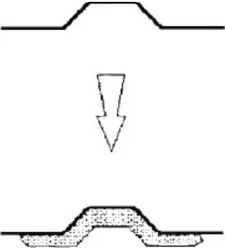</figure>
<figure></figure>
<p>第６－３図　　　　　　　　　　　 　　第６－４図</p>
<p>8.3.2 ）車体のサスペンション取り付け部を繋ぐ取り外し可能な（ボルトによる取り付け）補強バーの取り付けは許される。ただし、その取り付け点はサスペンションの取り付け点から100mm以内であること。また、メーカーラインオフ時に標準装着されているタワーバーについては、取り付け点を変更しなければ他のものに変更できる。</p>
<p>8.3.3 ）スペアタイヤのサイズを変更したことによって、当初の格納カバーが装着できない場合はそれを取り除くことができる。</p>
<p>8.3.4 ）マフラーの補強は脱落防止、破損防止を目的としたものであれば許される。</p>
<h5 id="第-条-電気系統">第９条　電気系統</h5>
<h5 id="9-1-灯火-2">9.1 ）灯火</h5>
<h5 id="9-1-1-前照灯-2">9.1.1 ）前照灯</h5>
<p>走行用前照灯（ハイビーム）は一般交通の用に供することを目的としている道路の走行要件を満たすことを条件に追加、変更が認められる。ただし、乗用車の外部突起に係る協定規則第26号に適合していること。</p>
<h5 id="9-1-2-前部霧灯-フォグランプ-2"><span class="pagemark" id="p40">P.40</span>9.1.2 ）前部霧灯（フォグランプ）</h5>
<p>追加、変更は認められるが、取り付けのためやむを得ずバンパー等を切除する場合は、必要最小限の範囲にとどめること。また前部霧灯の取り付け、取り外しに伴う全長の変化は、自動車検査証の長さ欄に記載されている数値から±３cmの範囲でなければならない。また、いかなる場合も下記の基準を満たしていなければならない。</p>
<p>①同時に３個以上点灯する構造のものでないこと。</p>
<p>②照射光線は他の交通を妨げないものであること。</p>
<p>③照明部の上縁の高さが地上0．8ｍ以下であって、すれ違い用前照灯の照明部の上縁を含む水平面以下、下縁の高さが地上0．25ｍ以上となるように取り付けられていること。</p>
<p>④照明部の最外縁は、自動車の最外側から400mm以内となるように取り付けられていること。</p>
<p>⑤灯火の色は白色または淡黄色であり、そのすべてが同一であること。</p>
<p>⑥前部霧灯は左右同数であり（前部霧灯を１個備える場合を除く）、かつ前面が左右対称である自動車に備えるものにあっては、車両中心面に対して対称の位置に取り付けられたものであること。</p>
<p>⑦取り付け部は、照射光線の方向が振動、衝撃等により容易にくるわない構造であること。</p>
<h3 id="第-章-車両用改造規定-5"><span class="pagemark" id="p41">P.41</span>第７章　ＲＦ車両用改造規定</h3>
<h3 id="第-章-車両用改造規定-6">第７章　ＲＦ車両用改造規定</h3>
<h5 id="第-1-条-改造の制限">第 1 条　改造の制限</h5>
<p>本規定で制限されていない改造を行った場合、車両の部品を変更または交換、いかなる部品を装着した場合にも、車両の使用者の責任において保安基準に適合させた状態とし、常に適合するよう維持しなければならない。</p>
<h5 id="第-2-条-エンジン-2">第 2 条　エンジン</h5>
<p>当該型式原動機に対する改造は、加工の必要なく取り付けられるもの以外の使用は認められない。</p>
<h5 id="2-1-総排気量">2.1 ）総排気量</h5>
<p>自動車製造者が当該型式原動機の補修用として設定しているオーバーサイズピストンを含み変更は認められない。</p>
<h5 id="2-2-エアクリーナー">2.2 ）エアクリーナー</h5>
<p>エレメントの変更のみ自由。</p>
<h5 id="2-3-電子制御装置">2.3 ）電子制御装置</h5>
<p>変更されたユニットは当初のものと完全に互換性がなければならない。すなわち、いかなる場合であっても当該ユニットを量産ユニットと交換してエンジンが正常に稼動しなければならず、入力側のセンサーおよびアクチュエーターはその機能を含みメーカーラインオフ状態の仕様と同一であること。</p>
<h5 id="2-4-オイルクーラーおよびインタークーラー">2.4 ）オイルクーラーおよびインタークーラー</h5>
<p>配管を含み車体から突出しないこと。</p>
<h5 id="2-5-ブローバイガス還元装置">2.5 ）ブローバイガス還元装置</h5>
<p>取り外さないこと。</p>
<h5 id="第-3-条-排気系">第 3 条　排気系</h5>
<p>3.1 ）排気系（エキゾーストマニホールドを含む）の変更は許されるが、下記の規定を満たしていなければならない。変更する場合、第５編細則「ラリー車両およびスピードＳＡ車両の後付マフラーに関する細則」に留意すること。なお、オーガナイザーは当該競技会特別規則に規定することによって、音量を規制することができる（マフラーおよび排気管の変更について制限することも含む）。</p>
<p>①排気管は左または右向きに開口してはならない。</p>
<p>②触媒コンバーター、排気ガス再循環装置、Ｏ2センサー、二次空気導入装置等が当初の通り取り付けられていること。</p>
<p>③遮熱板等の熱害対策装置は同一の構造を有し、かつ同じ位置に備えられ損傷・脱落がないこと。</p>
<p>④当該車両の保安基準適合品への変更であり、音量規制値及び排気ガス規制値に適合していること。</p>
<h5 id="第-4-条-駆動系統-3">第 4 条　駆動系統</h5>
<p>4.1 ）駆動方式の変更は認められない。（4 ＷＤ←→2 ＷＤ）</p>
<h5 id="第-5-条-ステアリングホイール">第 5 条　ステアリングホイール</h5>
<p>下記の条件を満たしたものと交換することができる。</p>
<p>①スポーク部とボス部は堅固な取り付け構造とし、衝撃を受けた場合に容易に脱落する恐れのないこと。</p>
<p>②計器盤の視認性を阻害しない形状をしていること。</p>
<p>③光の反射による運転の妨げとなるような部分がないこと。</p>
<p>④ステアリングホイールの変更により、かじ取り装置の衝撃吸収装置に影響を与えるものでないこと。</p>
<h5 id="第-6-条-車体">第 6 条　車体</h5>
<h5 id="6-1-ドアの材質変更は認められない">6.1 ）ドアの材質変更は認められない。</h5>
<p>6.2 ）ドアの内張りについては、ドアの形状に変化が生じないことを条件としてドアから防音材を取り外すことが認められる。内張りパネルは最低0.5mm厚の金属板、あるいは最低１mm厚のカーボンファイバー、もしくは最低２ mm厚のその他の堅固な不燃性の素材で製作することができる。</p>
<p>サイドプロテクションバーの取り外しは許されない。</p>
<p>２ドア車の場合、後部側面ウィンドウより下に位置する内張りについても上記規則を適用する。</p>
<h3 id="第-章-車両用改造規定-7"><span class="pagemark" id="p42">P.42</span>第７章　ＲＦ車両用改造規定</h3>
<p>電動ウィンドウを手動ウィンドウに交換することが認められる。</p>
<p>手動ウィンドウを電動ウィンドウに交換することが認められる。</p>
<h5 id="6-3-窓ガラスの変更は認められない">6.3 ）窓ガラスの変更は認められない。</h5>
<h5 id="6-4-座席">6.4 ）座席</h5>
<p>変更する場合は下記の規定を満たすこと。</p>
<p>変更の有無に拘らず乗車定員分の座席を有すること。</p>
<p>①座席の幅×奥行は400mm×400mm以上確保すること。</p>
<p>②座席面上で座席前端より200mmの点から背もたれに平行な天井までの距離は800mm以上確保すること。</p>
<p>③座席および当該座席の取り付け装置は衝突時等に乗員から受ける衝撃力、慣性力等の荷重に耐えるものでなければならない。</p>
<p>④座席の後面部分（ヘッドレストを含む）は、衝突等で当該座席の後席乗員の頭部等が当たった場合に衝撃を吸収することができる構造でなければならない。</p>
<p>⑤追突等の衝撃を受けた場合に乗員の頭部が過度に後傾するのを抑止することができる装置（ヘッドレスト）を備えるかまたは座席自体が同等の効果を有する構造でなければならない。</p>
<p>⑥２名乗車車両のシートの車体フレームへの直付け（スライド機構無）は許される。</p>
<p>なお、変更する座席および座席取り付け装置は、上記のほかにＦＩＡ国際モータースポーツ競技規則付則Ｊ項第253条第16項を満たしたものであることが強く推奨される。</p>
<h5 id="第-7-条-タイヤおよびホイール-2">第 7 条　タイヤおよびホイール</h5>
<h5 id="7-1-ホイール-3">7.1 ）ホイール</h5>
<p>下記条件を満たしたホイールを使用すること。</p>
<p>①部分的であっても複合素材から成るホイールの使用は禁止する。</p>
<p>②ホイールの材質はスチール製またはＪＷＬマークのある軽合金製（アルミ合金製、マグネシウム合金製など）とする。</p>
<p>③ホイールナットの材質および形状の変更は許されるが、ホイールスペーサーの使用は認められない。</p>
<p>ホイールに間隔保持のための部材を溶接することはホイールスペーサーの使用とみなされる。また、アクスルハブに間隔保持のための部材を取り付けるとは、その取り付け方法の如何にかかわらずホイールスペーサーの使用とみなされる。</p>
<p>④いかなる場合にも、車両のトレッドを拡大することは認められない。ただし、ホイールの変更に伴う最小限のトレッドの変化は許される。</p>
<p>⑤ホイールに追加される排風装置の装着は認められない。</p>
<h5 id="7-2-タイヤ-3">7.2 ）タイヤ</h5>
<p>装着できるタイヤはＪＡＴＭＡ ＹＥＡＲ ＢＯＯＫに記載されているもの、またはこれと同等なものであり、かつ下記の条件を満たしていなければならない。</p>
<p>①公道走行が認められている一般市販タイヤおよびラリー用として認められたＦＩＡ公認タイヤ（注１）に限られる。競技専用タイヤの使用はいかなる場合でも認められない（注１は除く）。</p>
<p>②タイヤおよびホイールは、静止状態において地表以外の部分と接触してはならない。</p>
<p>③タイヤおよびホイールは、フェンダーからはみ出さないこと。（第７−１図参照）</p>
<figure>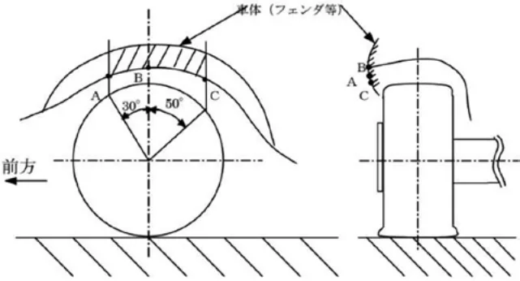</figure>
<p>第７－１図</p>
<p>④タイヤの溝は常に1.6mm 以上あること。</p>
<h3 id="第-章-車両用改造規定-8"><span class="pagemark" id="p43">P.43</span>第７章　ＲＦ車両用改造規定</h3>
<p>⑤いかなる場合であっても、タイヤに対する加工は許されない。</p>
<p>⑥タイヤのウォームアップ、溶剤塗布などは認められない。</p>
<p>⑦原則としてスパイクタイヤの使用は認められない。</p>
<p>⑧タイヤ内部に空気以外のものを充填することは禁止される。</p>
<h5 id="7-3-スペアホイール-3">7.3 ）スペアホイール</h5>
<p>車両には１本または複数のスペアホイールを搭載しなければならない（ただし、当初の車両に搭載されていない場合はこの限りではない）。スペアホイールは必ずしっかりと固定されていなければならない。</p>
<h5 id="第-8-条-競技会における制限">第 8 条　競技会における制限</h5>
<p>　音量規制等で特に必要がある場合には、当該競技会特別規則に規定することによって、当該競技会参加車両の改造を制限することができる。</p>
<h4 id="全日本ラリー選手権-適用車両規定">ＪＡＦ全日本ラリー選手権　適用車両規定</h4>
<h5 id="第-条-適用車両規定">第１条　適用車両規定</h5>
<p>　ＪＡＦ全日本ラリー選手権におけるクラス１（JN- 1）に、国際モータースポーツ競技規則付則Ｊ項に基づく、以下の車両規定が適用される。</p>
<p>（１）道路運送車両法（昭和26年法律第185号）第34条第１項に基づく臨時運行許可を得た、ＲＲＮを除くＦＩＡ公認車両</p>
<p>（２）道路運送車両法（昭和26年法律第185号）第34条第１項に基づく臨時運行許可を得た、当該年の国際モータースポーツ競技規則付則J項252条および253条の安全要件・一般事項等に基づくＡＳＮ公認車両（Group AP4）</p>
<p>（３）道路運送車両法（昭和26年法律第185号）第34条第１項に基づく臨時運行許可を得た、当該年の国際モータースポーツ競技規則付則J項252条および253条の安全要件・一般事項等、２０２５年全日本ラリー選手権統一規則付則：全日本ラリー選手権に適用されるＪＡＦ公認車両「ＪＰ４」に関する規定に基づくＪＡＦ公認車両（ＪＰ４）</p>
<h5 id="第-条-公認車両-の定義">第２条　ＪＡＦ公認車両「ＪＰ４」の定義</h5>
<p>　原則として基本車両がＪＡＦ登録車両であり、以下いずれかを満たす車両。なおＪＡＦ公認車両「ＪＰ４」の基本車両は、一般交通の用に供することを目的にしている道路での使用を前提とした量産車両（量産方式で同一型式の車両が一定数生産され、自動車製造者による通常の販売経路を通じて入手可能な車両）である。</p>
<p>　また、基本車両は必ずしもＦＩＡ公認車両一覧に記載されている必要はなく、車両の技術情報と仕様、主要諸元等は、ＦＩＡ車両公認書（車両が公認されている場合）、またはＪＡＦ登録車両である場合は、当該自動車製造者が発行するカタログ、パンフレット等で確認するものとする。</p>
<p>１）ＦＩＡ国際モータースポーツ競技規則付則J 項第２６０条（Ｒａｌｌｙ５／Ｒａｌｌｙ４／Ｒａｌｌｙ３）または</p>
<h5 id="第-条-および-それらの車両に関する-公認規則に準拠して製作された公認取得前の車両">第２６１条（Ｒａｌｌｙ２）および、それらの車両に関するＦＩＡ公認規則に準拠して製作された公認取得前の車両。</h5>
<p>２）ＦＩＡ国際モータースポーツ競技規則付則J 項２５２条および第２５３条の安全要件・一般事項等に基づく下記の海外ＡＳＮが規定するＧｒｏｕｐＡＰ４技術規則に準拠して製作され、海外ＡＳＮが公認した、または公認取得前の車両。</p>
<p>・Ｍｏｔｏｒｓｐｏｒｔ Ａｕｓｔｒａｌｉａ</p>
<p> （https://motorsport.org.au/wpblob0fe832abcb/wp-content/uploads/2023/12/7.16-2025-Group-AP4. pdf?x62217&amp;x62217）</p>
<p>・Ｍｏｔｏｒｓｐｏｒｔ Ｎｅｗ Ｚｅａｌａｎｄ</p>
<p>（https://motorsport.org.nz/wp-content/uploads/Group-AP4-Technical-Regulations-2022-V1.0.pdf）</p>
<h5 id="第-条-車両改造規定">第３条　ＪＰ４車両改造規定</h5>
<p>別途定める当該年の「全日本ラリー選手権に適用されるＪＡＦ公認車両「ＪＰ４」に関する規定」に基づく。</p>
</article></body></html>